Zur Version ohne Bilder
Mit ImageMagick lassen sich per Kommandozeile Bilder bearbeiten und erstellen. Es bietet viele Manipulationen und verschiedene Möglichkeiten, Bilder zu erzeugen. ImageMagick ist besonders gut zur automatischen Bearbeitung vieler Bilder geeignet. In diesem Artikel wird anhand mehrerer Beispiele die Anwendung gezeigt. (weiterlesen)
Zum Inhaltsverzeichnis
Slackware 14.2
Der August im Kernelrückblick
Anleitungen
ImageMagick – eine Einführung
Software
Podcasts mit Audacity
Einführung in Gregorio 4.1.4
Community
Eine Geschichte von Linux – Teil 2
Rezension: Blender 2.7 – Das umfassende Handbuch
Rezension: Adventures in Arduino
Magazin
Veranstaltungen
Vorschau
Konventionen
Impressum
Zum Inhaltsverzeichnis
[1] https://www.linuxfoundation.org/announcements/linux-foundation-releases-development-report-highlighting-contributions-to-linux
Beitrag teilen Beitrag kommentieren
Zum Inhaltsverzeichnis
Neben KDE liefert Slackware Xfce als Desktop mit.
Start der Installations-DVD.
Wer Slackware in einer virtuellen Maschine installiert, wird feststellen, dass die Installation von LILO scheitert. Der schlaue Slacker hat jedoch vor der Installation bereits die Dokumentation der Änderungen [10] gelesen und weiß, dass er dies durch eine zusätzliche Zeile in /etc/lilo.conf beheben kann. Der Nachteil ist, dass LILO nun manuell installiert werden muss. Allerdings sind die Benutzer sowieso aufgefordert [11], anstelle des Installations-Kernels („huge“) den kleineren „generic“-Kernel zu verwenden, der aber eine initrd erfordert. Diese muss manuell mit mkinitrd erstellt werden und in /etc/lilo.conf eingetragen werden. Danach kann man LILO neu installieren, wozu man mit chroot in das installierte System wechseln muss. In ähnlicher Weise muss man auch vorgehen, wenn man von LVM booten will. Dies ist in einer mitgelieferten README-Datei [12] beschrieben. Alternativ zu LILO kann auch Grub 2 installiert werden. Wegen besserer Rescue-Möglichkeiten ist das zu empfehlen. Eine Grub-Konfigurationsdatei wird allerdings – typisch Slackware – nicht automatisch erzeugt. Eine anfängliche Konfiguration, die noch optimierbar ist, kann man mit grub-mkconfig anlegen. Als nächster Schritt nach dem Bootloader wird das Netz konfiguriert – Rechnername, Domain, statische IP oder DHCP. Es folgen noch Auswahl der zu startenden Systemdienste und Server, optional die Einrichtung von Konsolenschriftarten, Zeiteinstellung und Zeitzone, die Auswahl der Desktopumgebung oder des Window-Managers (KDE, Xfce, Fluxbox, Blackbox, WMaker, fvwm2, twm), und optional die Vergabe eines Root-Passworts. Damit ist die Installation beendet, alles Weitere liegt im Ermessen des Benutzers.
So präsentiert sich Slackware vor der weiteren Konfiguration.
X wird dauerhaft aktiviert, indem man in /etc/inittab den initdefault-Runlevel auf 4 (Standard ist 3) setzt. Danach kann man init 4 eingeben, und X startet. Wenn man KDE installiert hat, wird man nun vom KDE-Window-Manager begrüßt; andernfalls muss man sich mit dem optisch wesentlich weniger hergebenden xdm begnügen. Man kann die X-Sitzung auf eines der installierten Desktop-Systeme oder einen der installierten Window-Manager festlegen, was außer KDE anfänglich Xfce, FluxBox, WindowMaker, Fvwm2, BlackBox, MWM und den uralten twm zur Wahl stellt. 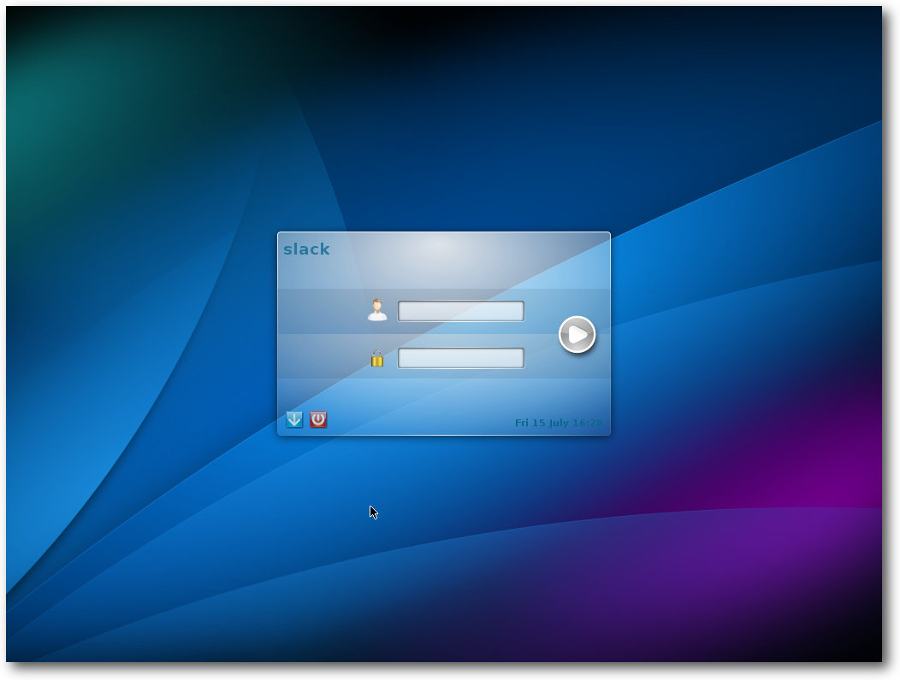
Der optisch erneuerte Login-Bildschirm.
Erster Start von Firefox 45.
[1] http://www.pro-linux.de/artikel/2/1840/slackware-142.html
[2] http://www.slackware.com/
[3] http://www.slackware.com/changelog/stable.php?cpu=x86_64
[4] http://www.droplinegnome.net/
[5] https://mateslackbuilds.github.io/
[6] http://slackware.uk/msb/
[7] http://slackbuilds.org/
[8] http://mirrors.slackware.com/
[9] http://store.slackware.com/
[10] http://mirror.netcologne.de/slackware/slackware64-14.2/CHANGES_AND_HINTS.TXT
[11] http://mirror.netcologne.de/slackware/slackware64-14.2/RELEASE_NOTES
[12] http://mirrors.slackware.com/slackware/slackware64-14.2/README_LVM.TXT
[13] http://mirror.netcologne.de/slackware/slackware64-14.2/UPGRADE.TXT
[14] http://www.libreoffice.org/
[15] http://www.slackware.com/~alien/slackbuilds/libreoffice/
[16] http://flatpak.org/getting.html
[17] http://appimage.org/
[18] https://docs.docker.com/engine/installation/binaries/
[19] http://slackware.com/lists/
[20] http://www.slackpkg.org/
[21] http://software.jaos.org/#slapt-get
[22] http://slackwiki.com/Checkinstall
Beitrag teilen Beitrag kommentieren
Zum Inhaltsverzeichnis
[1] https://lkml.org/lkml/2016/8/7/93
[2] https://de.wikipedia.org/wiki/DocBook
[3] https://de.wikipedia.org/wiki/Sphinx_(Software)
[4] https://lkml.org/lkml/2016/8/14/874
[5] https://lkml.org/lkml/2016/8/21/378
[6] https://de.wikipedia.org/wiki/Advanced_Configuration_and_Power_Interface
[7] https://lkml.org/lkml/2016/8/28/223
[8] https://de.wikipedia.org/wiki/Kernel-based_Virtual_Machine
[9] https://de.wikipedia.org/wiki/Deadlock_(Informatik)
[10] https://de.wikipedia.org/wiki/Speicherleck
[11] https://kernel.org/category/releases.html
[12] https://plus.google.com/+gregkroahhartman/posts/DjCWwSo7kqY
[13] https://groups.google.com/forum/#!original/comp.os.minix/dlNtH7RRrGA/SwRavCzVE7gJ
Beitrag teilen Beitrag kommentieren
Zum Inhaltsverzeichnis
Ursprungsbild
Bild mit Rahmen
Bild mit Text
Bild mit abgerundeten Ecken
Bild mit 3D-Effekt
Bild mit abgerissenen Effekt
[1] http://www.imagemagick.org/
[2] http://www.graphicsmagick.org/
[3] https://commons.wikimedia.org/wiki/File:Falkland_Islands_Penguins_36.jpg
[4] http://www.imagemagick.org/script/command-line-options.php
[5] http://www.imagemagick.org/script/command-line-processing.php#geometry
[6] http://www.imagemagick.org/Usage/text/
[7] http://www.imagemagick.org/Usage/thumbnails/#fluff
[8] http://www.imagemagick.org/Usage/
Beitrag teilen Beitrag kommentieren
Zum Inhaltsverzeichnis
Die optimalen Geräteeinstellungen
Optimal bedeutet, dass man das gewünschte Aufnahmegerät und – sofern wählbar – die Anzahl der Kanäle bestimmt. Ein typisches Headset bietet lediglich eine Mono-Aufzeichnung an. Dann wechselt man als Nächstes zu den Qualitätseinstellungen. Diese kann man projektübergreifend in den Programmeinstellungen unter „Qualität“ oder aber projektbezogen über die Zeit-/Projektfrequenzleiste anpassen. Für einen typischen Podcast genügt es, wenn man diesem eine Sample-Frequenz von 44100 Hz und ein Sample-Format von 16 bit zuweist. 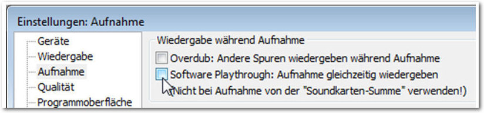
Die Aufnahmeeinstellungen
Als Nächstes sollten man die Aufnahmeeinstellungen bearbeiten. Dazu öffnet man die Programmeinstellungen und dort die Kategorie „Aufnahme“. Hier stellt man sicher, dass unter „Wiedergabe während der Aufnahme“ die beiden Optionen „Overdub“ und „Software Playthrough“ deaktiviert sind. Damit sind die wesentlichen programm- und projektübergreifenden Einstellungen vorgenommen. Sofern noch nicht geschehen, schließt man das Mikrofon an. Das USB-Gerät muss vor dem Programmstart an den Rechner angeschlossen sein, um von Audacity erkannt zu werden. Der nächste vorbereitende Schritt dient der Konfiguration des Eingangspegels. Dazu spricht man einfach einige beliebige Sätze in das Mikrofon und pegelt den Level um -9 bis -12 dB aus. Damit hat man ein gutes Signal-Rauschen-Verhältnis. Man sollte darauf achten, dass man die Null nicht überschreitet, da man andernfalls jede Menge Übersteuerungen bekommt. Für die Anpassung des Pegels kann man unter Umständen auch auf Treibersoftware des jeweiligen Herstellers zurückgreifen. Für Linux-Anwender steht ALSA zur Verfügung. Damit hat man alle notwendigen Vorbereitungen für die Aufnahme getroffen und man kann prinzipiell mit der Aufnahme beginnen. Dazu betätigt man die „Aufnahme“-Schaltfläche der Transportleiste und zeichnet den Text auf. 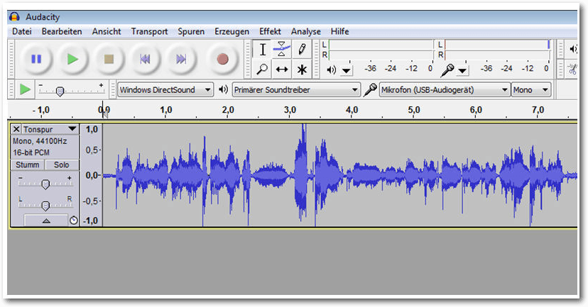
Der Anfang ist gemacht: Die ersten Sätze sind im Kasten
Hintergrundmusik lässt sich auch wunderbar mit dem Effekt „Auto-Duck“ steuern.
Textspuren sind eine große Hilfe bei der Arbeit mit Audacity, weil man damit Erläuterungen zu verschiedenen Abschnitten eines Projekts einfügen kann – ähnlich, wie Programmierer ihre Entwicklungen mit Kommentaren versehen. So findet man sich nach einer Pause schnell wieder in einer Entwicklung zurecht und vereinfacht auch die Zusammenarbeit mit Dritten. Abschließend sollte man das Projekt in aller Ruhe am Rechner abhören und prüfen, ob es das gewünschte Ergebnis erzielt.
[1] http://www.freiesmagazin.de/freiesMagazin-2016-06
[2] http://www.freiesmagazin.de/freiesMagazin-2016-07
Beitrag teilen Beitrag kommentieren
Zum Inhaltsverzeichnis
Vorlage für das Notationsbeispiel aus dem Graduale Romanum (1961).
Als Minimalbeispiel sähe die TeX-Datei so aus:
Notation der Tonhöhe in GABC
Das Codebeispiel mit Text und Tonhöhen:
Erster Schritt der Notation des Beispiels
Schaut man sich das Ergebnis genauer an, sieht man, dass Gregorio aufeinanderfolgende Noten zum Teil automatisch zu komplexeren Neumen zusammenfügt. Im Fall dieses Beispiels sind sogar schon alle Mehrtonneumen richtig gesetzt. Es fehlen noch kleinere Angaben zu Rhythmus und Tonlänge, der kleine Strich (das sog. Ictus-Zeichen) und die zwei Punkte. Diese werden durch ein folgendes Apostroph bzw. durch zwei folgende Punkte notiert. Zudem wird noch ein Asterisk im Text gesetzt und eine kurze Pause durch eine halbe Linie markiert. Ein Ausrufezeichen in einer Gruppe von drei Noten dient der Unterteilung in eine Einzel- und eine Doppelneume. Diese Unterteilung (auf der Silbe "ae") wurde bereits richtig erkannt, aber das Ausrufezeichen rückt die Neumen noch enger zusammen und markiert so die Zusammengehörigkeit.
Zweiter Schritt der Notation des Beispiels
In dieser Weise lassen sich recht schnell die Gesänge abtippen. Da sich die GABC-Syntax nur am optischen Erscheinungsbild der Noten orientiert und nicht an der Tonlage, sind keinerlei musikalische Kenntnisse vonnöten. Schon nach kurzer Zeit hat man den Beginn des Introitus abgetippt:
Dritter Schritt der Notation des Beispiels
Hier waren noch weitere Zeichen und der entsprechende Code vonnöten. Zunächst ein Vorzeichen: Dieses notiert man durch Angabe der richtigen Höhe und ein folgendes „x“ für ein b-Vorzeichen oder ein „y“ für ein Auflösungszeichen. Die rautenförmigen Notenköpfe, die sog. „Puncta inclinata“ werden durch denselben Buchstaben, jedoch in Großschrift notiert. Zuletzt kommt noch ein sog. „Quilisma“ vor, das ist der wellenförmige Notenkopf. Dieser wird durch ein nachgestelltes „w“ zum gewohnten Buchstaben der Tonhöhe kodiert. Diese und alle anderen nötigen Codes lassen sich leicht auf der sehr übersichtlichen Notationsreferenz [10] nachschlagen. Um die Ausgabe weiter zu gestalten, stehen eine Reihe Makros zur Verfügung, die in der TeX-Datei einzusetzen sind. So kann bspw. die Größe der Initiale, der Abstand der Notenlinien oder die Farbe der Notenlinien (rot ist z.T. gebräuchlich) verändert werden. Das Projekt arbeitet inzwischen an weiteren Funktionalitäten. So wurde die GABC-Syntax um NABC erweitert. Es handelt sich um Kodierungen, um die noch ältere Notenschrift der Neumen zu setzen. Seit der Mitte des 20. Jahrhunderts wurden Ausgaben von Choralbüchern vermehrt um diese Zeichen ergänzt. Die Neumen werden über oder unter den Notenzeilen gedruckt. Sie geben die Rhythmik der Gesänge präziser wieder als die Quadratnotation, die ja ursprünglich keinerlei rhythmische Information enthielt. Gregorio ist inzwischen auch in der Lage, einen Großteil der St. Galler Neumen zu setzen.
[1] http://gregorio-project.github.io/
[2] https://musescore.org/de
[3] http://lilypond.org/
[4] http://www.freiesmagazin.de/freiesMagazin-2015-04
[5] https://de.wikipedia.org/wiki/Quadratnotation
[6] http://abcnotation.com/
[7] http://gregorio-project.github.io/installation.html
[8] https://www.scribus.net/
[9] http://marello.org/tools/syllabifier/
[10] http://gregobase.selapa.net/wp-content/uploads/2014/08/summary-gabc.pdf
[11] http://gregobase.selapa.net/
[12] http://www.kleingraduale.nl/LiturgiaHorarum/
[13] https://bbloomf.github.io/jgabc/faq.html
[14] http://gregorio.gabrielmass.com/cgi/process.pl
[15] http://dev.illuminarepublications.com/gregorio/
[16] http://gregoriochant.org/
Beitrag teilen Beitrag kommentieren
Zum Inhaltsverzeichnis
Zeitlicher Zusammenhang verschiedener Linux-Distributionen. Basierend auf [7].
[1] http://www.freiesmagazin.de/freiesMagazin-2015-11
[2] https://de.wikipedia.org/wiki/GNU/Linux-Namensstreit
[3] https://www.sjbaker.org/wiki/index.php?title=The_History_of_Tux_the_Linux_Penguin
[4] https://web.archive.org/web/20060922063151/http://www.ussg.iu.edu/hypermail/linux/kernel/9606.1/0175.html
[5] https://de.wikipedia.org/wiki/Yggdrasil_Linux
[6] http://www.ibiblio.org/pub/historic-linux/distributions/yggdrasil/
[7] https://upload.wikimedia.org/wikipedia/commons/1/1b/Linux_Distribution_Timeline.svg
[8] https://de.wikipedia.org/wiki/Slackware
[9] https://de.wikipedia.org/wiki/KISS-Prinzip
[10] https://de.wikipedia.org/wiki/Debian
[11] https://web.archive.org/web/20030604021612/http://ianmurdock.com/about/
[12] https://www.debian.org/doc/manuals/project-history/ch-releases.de.html
[13] https://de.wikipedia.org/wiki/Red_Hat_Linux
[14] https://de.wikipedia.org/wiki/OpenSUSE
[15] https://de.wikipedia.org/wiki/Fedora_(Linux-Distribution)
[16] https://de.wikipedia.org/wiki/Red_Hat_Enterprise_Linux
[17] https://de.wikipedia.org/wiki/CentOS
[18] https://de.wikipedia.org/wiki/Ubuntu
[19] https://de.wikipedia.org/wiki/IsiZulu
[20] https://de.wikipedia.org/wiki/Canonical
[21] https://de.wikipedia.org/wiki/Linux_Mint
[22] http://blog.linuxmint.com/?p=1910
[23] https://distrowatch.com/dwres.php?resource=popularity
[24] https://de.wikipedia.org/wiki/Arch_Linux
[25] https://wiki.archlinux.org/index.php/Arch_Linux#History
[26] https://de.wikipedia.org/wiki/Gentoo_Linux
[27] https://en.wikipedia.org/wiki/Gentoo_penguin
[28] https://en.wikipedia.org/wiki/Portage_(software)
Beitrag teilen Beitrag kommentieren
Zum Inhaltsverzeichnis
 geschickt werden. Die Kommentare werden bis zum Ende der
Verlosung nicht freigeschaltet. Das Buch wird unter allen
Einsendern, die die Frage richtig beantworten konnten, verlost.
geschickt werden. Die Kommentare werden bis zum Ende der
Verlosung nicht freigeschaltet. Das Buch wird unter allen
Einsendern, die die Frage richtig beantworten konnten, verlost.
Links
[1] https://www.rheinwerk-verlag.de/blender-27_3404/
Beitrag teilen Beitrag kommentieren
Zum Inhaltsverzeichnis
geschickt werden. Die Kommentare werden bis zum Ende der
Verlosung nicht freigeschaltet. Das Buch wird unter allen
Einsendern, die die Frage richtig beantworten konnten, verlost.
Links
[1] https://www.arduino.cc/
[2] http://www.wiley-vch.de/publish/dt/books/ISBN1-118-94847-5/
[3] https://en.wikipedia.org/wiki/Labyrinth_(marble_game)
Beitrag teilen Beitrag kommentieren
Zum Inhaltsverzeichnis
(Alle Angaben ohne Gewähr!)
Sie kennen eine Linux-Messe, welche noch nicht auf der Liste zu
finden ist? Dann schreiben Sie eine E-Mail mit den Informationen zu
Datum und Ort an .
Zum Inhaltsverzeichnis
Zum Inhaltsverzeichnis
Erscheinungsdatum: 4. September 2016
Dieses Magazin wurde mit LaTeX erstellt. Mit vollem Namen
gekennzeichnete Beiträge geben nicht notwendigerweise die Meinung
der Redaktion wieder. Wenn Sie freiesMagazin ausdrucken möchten, dann
denken Sie bitte an die Umwelt und drucken Sie nur im Notfall. Die
Bäume werden es Ihnen danken. ;-)
Soweit nicht anders angegeben, stehen alle Artikel, Beiträge und Bilder in freiesMagazin unter der Creative-Commons-Lizenz CC-BY-SA 4.0 International. Das Copyright liegt beim jeweiligen Autor. Die Kommentar- und Empfehlen-Icons wurden von Maren Hachmann erstellt und unterliegen ebenfalls der Creative-Commons-Lizenz CC-BY-SA 4.0 International. freiesMagazin unterliegt als Gesamtwerk der Creative-Commons-Lizenz CC-BY-SA 4.0 Unported mit Ausnahme der Inhalte, die unter einer anderen Lizenz hierin veröffentlicht werden. Das Copyright liegt bei Dominik Wagenführ. Es wird erlaubt, das Werk/die Werke unter den Bestimmungen der Creative-Commons-Lizenz zu kopieren, zu verteilen und/oder zu modifizieren. Die xkcd-Comics stehen separat unter der Creative-Commons-Lizenz CC-BY-NC 2.5 Generic. Das Copyright liegt bei Randall Munroe.
File translated from TEX by TTH, version 4.08.
On 9 Nov 2016, 21:37.
freiesMagazin September 2016
(ISSN 1867-7991)Themen dieser Ausgabe sind u. a.
Die älteste noch aktive Linux-Distribution hat nach längerer Entwicklungszeit die neue Version 14.2 veröffentlicht. Bemerkenswert wenig hat sich seit Version 14.1 getan. Der Artikel gibt eine kleine Übersicht über die Änderungen. (weiterlesen)Mit ImageMagick lassen sich per Kommandozeile Bilder bearbeiten und erstellen. Es bietet viele Manipulationen und verschiedene Möglichkeiten, Bilder zu erzeugen. ImageMagick ist besonders gut zur automatischen Bearbeitung vieler Bilder geeignet. In diesem Artikel wird anhand mehrerer Beispiele die Anwendung gezeigt. (weiterlesen)
Zum Inhaltsverzeichnis
Inhalt
Linux allgemeinSlackware 14.2
Der August im Kernelrückblick
Anleitungen
ImageMagick – eine Einführung
Software
Podcasts mit Audacity
Einführung in Gregorio 4.1.4
Community
Eine Geschichte von Linux – Teil 2
Rezension: Blender 2.7 – Das umfassende Handbuch
Rezension: Adventures in Arduino
Magazin
Veranstaltungen
Vorschau
Konventionen
Impressum
Zum Inhaltsverzeichnis
Editorial
25 Jahre Linux
Was einst als „nichts professionelles“, reines Hobbyprojekt begann, ist heute vor allem aus der vernetzten Welt nicht mehr wegzudenken. Und die Bedeutung von Linux angesichts immer weiter steigenden Datenmengen und deren Verarbeitung („big data“) kann auch nur weiter steigen. Am 22. August verkündete die Linux Foundation die Veröffentlichung des Berichts „Kernel Entwicklung – wie schnell geht es voran, wer trägt dazu was bei und wer bezahlt es?“ [1]. Die Zahlen sind umwerfend. Seit der Veröffentlichung des letzten Berichts im März 2015 haben nahezu 5000 Entwickler aus 400 Unternehmen Quelltext zum Linux-Kernel beigetragen. Fast die Hälfte davon zum ersten Mal überhaupt. Seit 2005 haben mehr als 13000 Leute zu 22 Millionen Quelltextzeilen beigetragen. Die große Mehrheit der Kernel-Entwickler ist bei Unternehmen beschäftigt, für die Linux wichtiger Geschäftsbestandteil ist. Nur noch ca. 8 % der Beiträge kamen von unbezahlten Helfern. Der Rest arbeitet für Unternehmen wie Intel, Red Hat, IBM, Google, AMD, etc., die unter den Top 10 der Sponsoren zu finden sind. Bemerkenswert ist dabei, dass Linux dabei meistens unbemerkt läuft. Kaum einer der 70 % Smartphone-Käufer in Deutschland, auf deren Telefon Android läuft, wissen, dass da ein Linux-Kernel im Hintergrund läuft. Und nur die wenigsten Nutzer der am meisten aufgerufenen Seite im Netz wissen, dass ihre Suchergebnisse von einem Linux-Server zu ihrem Browser geliefert werden. Nur die wenigsten Nutzer werden diese Seite jedoch von einem Computer oder Laptop aufrufen, auf welchem ein Linux-basiertes Betriebssystem läuft. Auch wenn man mehr benötigt als nur einen Kernel, um einen Computer zu benutzen, Linux ist das erfolgreichste Open-Source-Projekt, dass schlicht nicht mehr wegzudenken ist. Unser Magazin wäre doch ziemlich leer. Und nun wünschen wir Ihnen viel Spaß mit der neuen Ausgabe. Ihre freiesMagazin-Redaktion Links[1] https://www.linuxfoundation.org/announcements/linux-foundation-releases-development-report-highlighting-contributions-to-linux
Beitrag teilen Beitrag kommentieren
Zum Inhaltsverzeichnis
Slackware 14.2
von Hans-Joachim Baader Die älteste noch aktive Linux-Distribution hat nach längerer Entwicklungszeit die neue Version 14.2 veröffentlicht. Bemerkenswert wenig hat sich seit Version 14.1 getan. Der Artikel gibt eine kleine Übersicht über die Änderungen. Redaktioneller Hinweis: Der Artikel „Slackware 14.2“ erschien zuvor bei Pro-Linux [1].Vorwort
Slackware [2] lässt sich Zeit mit seinen Veröffentlichungen, welche keinem festen Schema folgen. Ungefähr im Jahresabstand lässt Patrick Volkerding, der Initiator und Hauptentwickler von Slackware, eine neue Version vom Stapel. Dieses Mal vergingen allerdings rund zwanzig Monate seit der letzten Slackware-Version 14.1. Da Slackware nur grundlegende Software enthält, ist jede Version gut getestet, so auch dieses Mal. Deshalb gibt Slackware in der Regel keine Updates der veröffentlichten Version heraus, außer wenn Sicherheitslücken gefunden werden. Seit dem ersten Aufkommen von Linux-Distributionen – und Slackware war eine der ganz frühen – hat sich Slackware nie grundlegend geändert. Die Distribution bleibt ihrer Philosophie geradezu stoisch treu. Das beginnt bereits bei der Installation, die sich seit den Anfängen der Distribution (aus SLS hervorgegangene Betaversion April 1993, erste offizielle Version 1.0.1 vom 4.8.1993) kaum nennenswert geändert hat. Auch die Paketorganisation blieb gleich, und die Werkzeuge erlebten allenfalls eine Evolution, aber keine Revolution. Die Slackware-Philosophie ist schnell erklärt. Kurz gesagt unterscheidet sich die Distribution grundlegend von den meisten anderen Linux-Distributionen. Slackware will die Unix-ähnlichste Distribution überhaupt sein, dies äußert sich beispielsweise in den an BSD orientierten Init-Skripten und dem Festhalten an traditionellen Anwendungen, auch wenn sie kaum noch von Belang sind oder bessere Alternativen vorhanden wären. Wichtig ist für Slackware die Kompatibilität: Mit dem „Filesystem Hierarchy Standard“ (FHS) von Linux und anderen offiziellen Linux-Standards; mit Unix; und mit den zahllosen Softwarepaketen in der freien Wildbahn, die sich unter Slackware problemlos kompilieren oder (bei proprietärer Software) problemlos installieren lassen sollen. Einfachheit und Stabilität sind für Slackware die wichtigsten Ziele. Durch die Beschränkung der Pakete auf ein Minimalsystem, das aber alles enthält, was für den Anfang nötig und wichtig ist, wird der Einfachheit Genüge getan. Es gibt weder komplexe, schwer zu verstehende Init- oder Setup-Skripte, noch Änderungen an der paketierten Software. Gute Dokumentation ist selbstverständlich, wenn auch im Zeitalter von Google und Co. vielleicht von abnehmender Bedeutung. Die Stabilität ist für Slackware in zweierlei Hinsicht von Bedeutung. Wenn eine Software mutiert und sich in einer neuen Version ganz anders verhält als in der alten, dann bleibt Slackware oftmals noch eine oder mehrere Versionen lang bei der alten Version, sofern diese gewartet wird. Das sieht man beispielsweise aktuell an KDE 4, das von Slackware nochmals den Vorzug gegenüber den KDE Frameworks und Plasma 5 erhalten hat. Auch wenn eine neue Software-Version beim Test Probleme zeigt, bleibt Slackware einfach bei der alten Version. Die Einfachheit von Slackware zeigt sich auch daran, dass eine Handvoll Entwickler ausreichend sind, um das System zu pflegen. Patrick Volkerding dürfte sogar der Einzige sein, der dies hauptamtlich tut. Natürlich werden auch zahlreiche andere Distributionen ausschließlich von Freiwilligen erstellt, meist ist dafür aber ein viel größeres Team nötig. Aus all dem folgt, dass Slackware dem Benutzer alle Freiheiten gibt, das System nach Belieben einzurichten, ihm aber auch nicht zur Hand geht. Konfiguration, Administration und die Verwaltung der Software erfolgt von Hand. Dementsprechend gehört auch nicht jeder Benutzer zur Zielgruppe von Slackware. Wer sich aber mit Linux grundlegend auskennt, der wird sich in Slackware gut zurecht finden.Slackware 14.2 im Überblick
In der überdurchschnittlich langen Zeit seit der letzten Version hat sich in der freien Softwarewelt viel getan. So wurde beispielsweise die Version des Linux-Kernels auf 4.x angehoben und Firefox hatte zahlreiche neue Versionen bis zu Version 45. Diese Pakete sind ebenso Teil von Slackware wie der auf LLVM beruhende C/C++-Compiler Clang, der neben GCC verfügbar ist. Alle Komponenten wurden laut Patrick Volkerding intensiv getestet und die ganze Distribution wird mehrere Jahre lang unterstützt, auch wenn sich diese Unterstützung auf Sicherheitsupdates beschränkt. Die älteste Slackware-Version, die aktuell noch unterstützt wird, ist die vor fast sieben Jahren erschienene Version 13.0. Im Vergleich zu 14.1 wurden zahlreiche Pakete aktualisiert oder hinzugefügt. So enthält Slackware 14.2 als Desktopumgebungen KDE 4.14.21 (eine Kombination aus KDE 4.14.3 und den KDE-Bibliotheken in Version 4.14.21) und Xfce 4.12.1 und daneben noch verschiedene Window-Manager. Die Desktops verwenden eudev, udisks, udisks2 und viele Spezifikationen von Freedesktop.org, um unter anderem normalen Benutzern Rechte für USB-Geräte und Wechselmedien zu gewähren, sodass diese Geräte einfach wie erwartet funktionieren. Als Kernel wird Linux 4.4.14 eingesetzt. Da Linux 4.4 ein Kernel mit langfristiger Unterstützung ist, wird die Distribution bei dieser Versionsreihe bleiben. Systemd bleibt bei Slackware zugunsten der Einfachheit außen vor. Ob ein Wechsel des Init-Systems jemals zur Debatte steht, bleibt abzuwarten. Das überkommene Init-System, das aus einer Zeit stammt, als Computer komplett statisch waren, hat jedenfalls genug Nachteile angehäuft, um über einen Wechsel nachzudenken. Slackware 14.2 kommt erstmals mit PulseAudio (Version 9.0) vorinstalliert. Der Grund dafür ist das Update auf BlueZ 5, das nötig war, da einige Projekte nun BlueZ 5 statt Version 4 voraussetzen. BlueZ 5 wiederum hat die direkte Unterstützung von ALSA aufgegeben und erzwingt nun PulseAudio. Daher wurden auch alle anderen Slackware-Pakete angepasst, sodass sie optimal mit PulseAudio funktionieren. Weitere Paketupdates in Slackware 14.2 sind unter anderem X.org 7.7, X-Server 1.18.3, Mesa 11.2.2, glibc 2.23, Bash 4.3.46, Calligra 2.9.11, Firefox 45.2, Thunderbird 45.1.1 und SeaMonkey 2.40. Ein Großteil der enthaltenen Pakete wurde aktualisiert. Die Distribution liefert etwa 1250 Pakete mit, hundert mehr als in Version 14.1. Für Entwickler und Systemverwalter sind GCC 5.3.0, LLVM/Clang 3.8, GDB 7.11.1, Perl 5.22.2, PHP 5.6.23, Python 2.7.11, Ruby 2.2.5, Subversion 1.9.4, Git 2.9.0, OpenSSH 7.2p2, MariaDB 10.0.25 und Apache 2.4.20 vorhanden. Pakete lassen sich in Slackware mit dem Werkzeug Slackpkg verwalten, mit dem sich auch bereits installierte Versionen aktualisieren lassen. Weitere Details kann man dem Änderungslog [3] entnehmen. Für Benutzer von GNOME 3 oder der GNOME-2-Weiterentwicklung Mate birgt Slackware 14.2 wieder Hoffnung. Pakete mit GNOME 3.20.1 sollen von Dropline [4] kommen, Mate dagegen kann mittels Slackbuild-Skripten MATE SlackBuilds [5] kompiliert werden, Binärpakete findet man auf slackware.uk/msb [6]. Viele weitere Pakete findet man auf slackbuilds.org [7]. 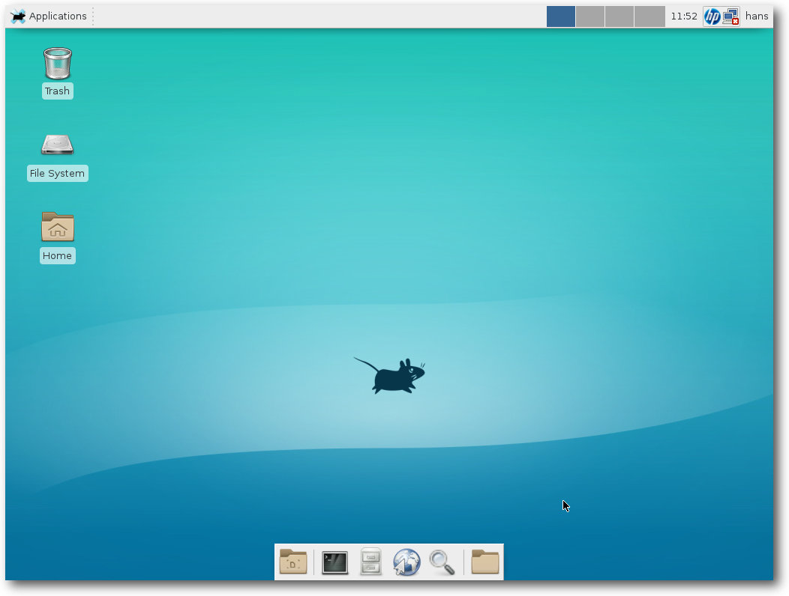Neben KDE liefert Slackware Xfce als Desktop mit.
Installation
Die Installation von Slackware 14.2 kann entweder durch ein Update einer bestehenden Slackware-Installation mit Hilfe eines Tools wie slackpkg oder mit den offiziellen ISO-Images erfolgen. Die Distribution umfasst sechs CDs, die nur die 32-Bit-Version enthalten, oder eine doppelseitige DVD mit der 32- und der 64-Bit-Version. Die Images stehen zum freien Download bereit [8]. Das CD-Set und die DVD sind auch im Slackware Store [9] und bei anderen Anbietern für 50 US-Dollar oder 40 Euro erhältlich. Mit dem Kauf der Medien finanziert sich Slackware zum Teil. Die Installation wurde für diesen Artikel in der 64-Bit-Version von DVD vorgenommen. Die DVD bringt ohne jede grafische Verzierung einen Bootprompt, an dem man den Kernel auswählen und Parameter eingeben kann. Normalerweise kann man einfach mit „Enter“ fortsetzen. Es folgt ein Prompt, an dem man eine „1“ eingeben kann, wenn man eine Tastaturbelegung auswählen möchte. Dann erscheint der Login-Prompt der Konsole. Man kann sich als root ohne Passwort einloggen. Es erscheint der Hinweis, dass man jetzt die Festplatte(n) nach Belieben partitionieren soll, wofür fdisk, cfdisk und gdisk (für GPT) zur Verfügung stehen. Im minimalen Fall legt man eine Swap-Partition und eine für den Rest an; dies ist jedoch auch die unflexibelste Option. Flexibler ist auf jeden Fall LVM, auch Btrfs wird unterstützt. Nach der Partitionierung ruft man setup auf. Damit geht es nun halbgrafisch weiter. Der erste Menüpunkt nach „Help“, „Keymap“, ist bereits abgearbeitet, sodass man nun „Addswap“ auswählen kann. Man muss allerdings nicht jeden Menüpunkt einzeln ansteuern, da das Setup nach der Erledigung eines Punkts automatisch zum nächsten springt. Sind eine oder mehrere Partitionen korrekt als Swap markiert, werden diese nun initialisiert. Dann geht es gleich weiter mit der Auswahl der Root-Partition. Das vorgeschlagene Standard-Dateisystem ist ext4. Als nächstes kommt die Auswahl der Installationsquelle, wobei CD/DVD, lokale Festplattenpartition, NFS, Samba, FTP/HTTP und gemountete Partition zur Auswahl stehen. Wurde die Quelle korrekt erkannt, kann man eine Auswahl der zu installierenden Paketserien vornehmen. Es lassen sich hier (außer Emacs und TeX) nicht einzelne Anwendungen auswählen, sondern nur Zusammenstellungen. Auf Desktop-Systemen ist es ratsam, X und X Apps auszuwählen, was bereits voreingestellt ist. Wenn man das ebenfalls voreingestellte KDE installieren will, sollte man auch KDEI, den International Language Support für KDE, hinzunehmen. Danach kann man noch auswählen, wie fein man die zu installierenden Pakete auswählen will. Die einfachste Option ist „Alles“, was ohne Rückfrage alle ausgewählten Serien der Distribution installiert. Wer entsprechend Zeit investieren will, kann aber auch „Menu“ wählen, um für jede Serie nochmals die einzelnen Pakete prüfen zu können. Ferner kann man eine im Voraus bereits angepasste Distribution mit sogenannten Tag-Dateien installieren. Nach Abschluss der Installation, die ihre Zeit dauert, kann man auf Wunsch einen bootfähigen USB-Stick zur Systemrettung einrichten (früher gab es hier die Option, eine Rettungs-Floppy zu erstellen). Danach wird – nach Abfrage mehrerer Optionen – LILO als Bootloader installiert. Anschließend folgt die Konfiguration von Maus und GPM, was nur noch von Belang ist, wenn man ohne X arbeitet, da X.org dies automatisch erkennt. 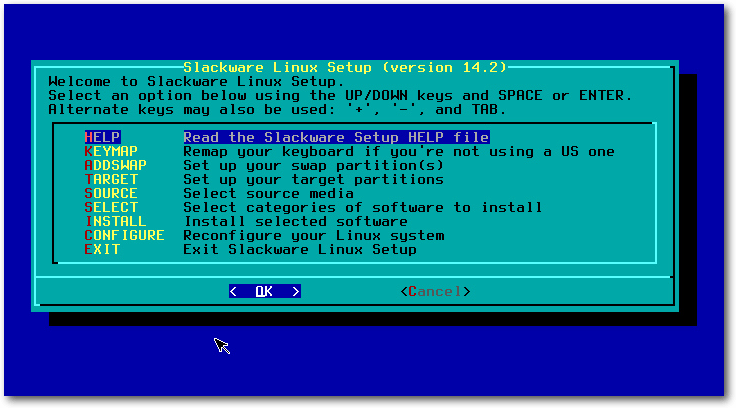Start der Installations-DVD.
Wer Slackware in einer virtuellen Maschine installiert, wird feststellen, dass die Installation von LILO scheitert. Der schlaue Slacker hat jedoch vor der Installation bereits die Dokumentation der Änderungen [10] gelesen und weiß, dass er dies durch eine zusätzliche Zeile in /etc/lilo.conf beheben kann. Der Nachteil ist, dass LILO nun manuell installiert werden muss. Allerdings sind die Benutzer sowieso aufgefordert [11], anstelle des Installations-Kernels („huge“) den kleineren „generic“-Kernel zu verwenden, der aber eine initrd erfordert. Diese muss manuell mit mkinitrd erstellt werden und in /etc/lilo.conf eingetragen werden. Danach kann man LILO neu installieren, wozu man mit chroot in das installierte System wechseln muss. In ähnlicher Weise muss man auch vorgehen, wenn man von LVM booten will. Dies ist in einer mitgelieferten README-Datei [12] beschrieben. Alternativ zu LILO kann auch Grub 2 installiert werden. Wegen besserer Rescue-Möglichkeiten ist das zu empfehlen. Eine Grub-Konfigurationsdatei wird allerdings – typisch Slackware – nicht automatisch erzeugt. Eine anfängliche Konfiguration, die noch optimierbar ist, kann man mit grub-mkconfig anlegen. Als nächster Schritt nach dem Bootloader wird das Netz konfiguriert – Rechnername, Domain, statische IP oder DHCP. Es folgen noch Auswahl der zu startenden Systemdienste und Server, optional die Einrichtung von Konsolenschriftarten, Zeiteinstellung und Zeitzone, die Auswahl der Desktopumgebung oder des Window-Managers (KDE, Xfce, Fluxbox, Blackbox, WMaker, fvwm2, twm), und optional die Vergabe eines Root-Passworts. Damit ist die Installation beendet, alles Weitere liegt im Ermessen des Benutzers.
Update von einer früheren Version
Slackware unterstützt das Update von einer früheren Version, allerdings wird empfohlen, das nicht im laufenden Betrieb zu machen, sondern in den Runlevel 1 zu gehen. Bevor man das tut, ist es sinnvoll, ein funktionierendes Backup zur Verfügung zu haben. Zusätzlich ist es nützlich, die Konfigurationsdateien in /etc zu sichern. Zwar überschreibt Slackware keine Konfigurationsdateien, legt aber neue Versionen der Konfigurationsdateien mit dem Suffix .new in die Verzeichnisse. Man muss diese dann manuell mit den alten vergleichen und gegebenenfalls anpassen. Das Backup erweist sich dann als besonders nützlich, wenn man dabei einmal einen Fehler macht. Das Vorgehen für das Update ist in UPGRADE.TXT [13] beschrieben. Es scheint einige Ungenauigkeiten zu enthalten, aber für Slackware-Nutzer stellt dies keine Schwierigkeit dar.Erster Start
Wenn man das frisch installierte System jetzt bootet, startet Slackware zunächst ohne X11. Vorausgesetzt man hat X und ggf. KDE installiert, möchte man normalerweise automatisch in das X Window System starten. Bevor man X aktiviert, ist es aber sinnvoll, die benötigten Benutzer anzulegen, im einfachsten Fall den einen Benutzer, der das System benutzt. 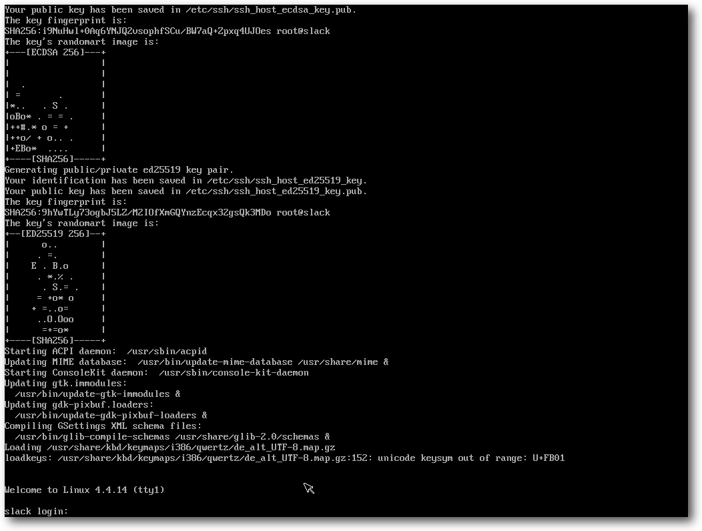So präsentiert sich Slackware vor der weiteren Konfiguration.
X wird dauerhaft aktiviert, indem man in /etc/inittab den initdefault-Runlevel auf 4 (Standard ist 3) setzt. Danach kann man init 4 eingeben, und X startet. Wenn man KDE installiert hat, wird man nun vom KDE-Window-Manager begrüßt; andernfalls muss man sich mit dem optisch wesentlich weniger hergebenden xdm begnügen. Man kann die X-Sitzung auf eines der installierten Desktop-Systeme oder einen der installierten Window-Manager festlegen, was außer KDE anfänglich Xfce, FluxBox, WindowMaker, Fvwm2, BlackBox, MWM und den uralten twm zur Wahl stellt. 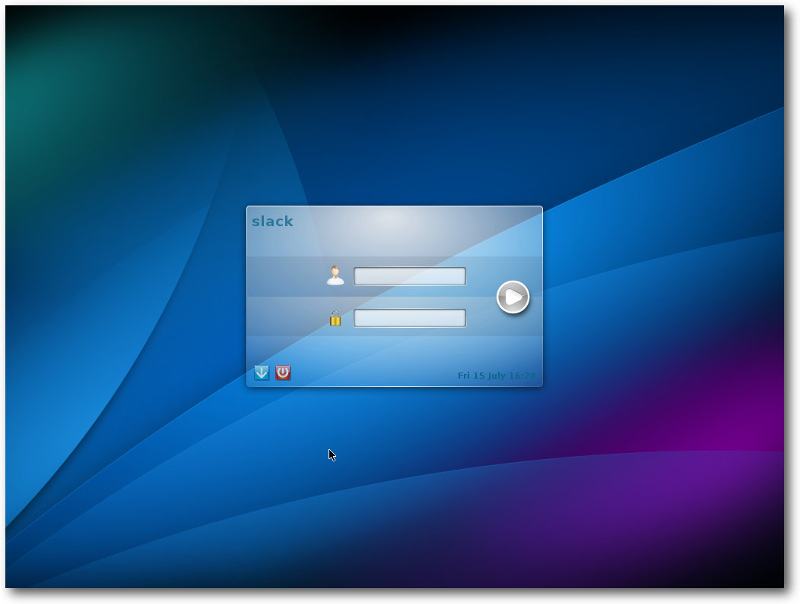
Der optisch erneuerte Login-Bildschirm.
Slackware in der Praxis
KDE belegt gleich nach dem Start mit einem Terminal-Fenster 415 MB. zum Vergleich: Xfce belegt 220 MB, dabei ist Xfce selbst nicht der größte Speicherverbraucher. Der größte Speichersünder ist Python, das für einige Applets benötigt wird, darunter das NetworkManager-Applet. So komfortabel Interpretersprachen auch sind, sie benötigen größtenteils sehr viel Speicher, und Python ist diesbezüglich eine der anspruchsvollsten. Der Desktop von Slackware entspricht anfänglich dem Zustand, den die Entwickler vorgegeben haben. Es sind nur die nötigsten Anwendungen enthalten, dazu gehört eine Office-Suite nicht zwingend. Wenn man KDE installiert hat, ist Calligra 2.9.11 dabei, andernfalls ist jedoch keine Office-Suite enthalten. Will man in Slackware Software nachinstallieren, dann geht das üblicherweise leicht, wenn der Anbieter distributionsneutrale tar.gz- oder Installer-Pakete bereitstellt. Dadurch, dass Slackware normalerweise alle benötigten Bibliotheken installiert hat, sollte das Paket nach der simplen Installation startklar sein. Es gibt aber auch einige Fälle, wo es nicht ganz so direkt geht. LibreOffice ist dafür ein Beispiel, da es auf der offiziellen Webseite [14] nur Pakete im DEB- und RPM-Format gibt. Eine Möglichkeit ist nun, die RPM-Version herunterzuladen, zu entpacken und mit dem Werkzeug rpm2tgz in Slackware-Pakete umzuwandeln. Es ist aber nicht garantiert, dass das auch funktioniert, und es gibt zum Glück bessere Methoden. Im Falle von LibreOffice etwa findet man Binärpakete für Slackware 14.0, 14.1 und 14.2 [15] auf der Slackware-Seite, die von Eric Hameleers („Alien BOB“) erstellt wurden. Die andere, mehr Gentoo-konforme Alternative, für die man aber wahrscheinlich noch einige vorausgesetzte Pakete installieren muss, ist das Erstellen des Office-Pakets aus dem Quellcode, wofür es fertige Skripte auf slackbuilds.org [7] gibt. Dafür benötigt man entsprechend ausreichend RAM, Platz und je nach Rechenleistung ungefähr eine Stunde Zeit. Weitere Alternativen, Software zu den Anwendern zu bekommen, sind im Entstehen. So wird LibreOffice testweise als Flatpak angeboten. Flatpak [16] ignoriert Slackware jedoch bisher komplett. Genauso sieht es mit Canonicals Alleingang Snappy aus. Egal wie man zu beiden Ansätzen steht, sie sind beide noch weit entfernt von der praktischen Einsetzbarkeit. Darüber hinaus hat Snappy noch ein ganz anderes Problem, da der Name bereits von zahlreichen anderen Programmen benutzt wird. AppImage [17] wäre noch eine Alternative dazu, es hat aber wohl noch niemand versucht, es auf Slackware einzusetzen. Es fehlt schließlich auch hier an Applikationen und damit an Motivation, es zu tun. Abschließend ein Wort zu Containern, auch wenn diese nicht geeignet sind, um Desktop-Anwendungen auszuführen. Slackware enthält lxc in Version 2.0.1, und Docker lässt sich, da Slackware nicht zu den direkt unterstützten Distributionen gehört, mit Hilfe von generischen tar.gz-Paketen installieren [18].Erster Start von Firefox 45.
Multimedia auf dem Desktop und im Browser
Xine, MPlayer und GStreamer sind vorinstalliert. Der Versuch, eine MP3-Datei abzuspielen, startete einen alten Bekannten: XMMS. Nach der ersten Verblüffung war klar, dass es sich tatsächlich um den originalen XMMS handelt. Im Gegensatz zu früheren Versionen ist es jetzt übrigens nicht mehr nötig, den Benutzer zur Gruppe audio hinzuzufügen. Das Abspielen von Audio funktioniert, vielleicht dank PulseAudio, jetzt auch so. Mit Videos hat Slackware keine Probleme, selbst wenn diese proprietäre Formate verwenden. Xine war in der Lage, alle abzuspielen. MPlayer dagegen nicht. Der Grund sind fehlende Plugins für GStreamer, nur die „guten“ sind installiert, doch für die meisten Videos benötigt man auch die „hässlichen“ sowie libav. In der aktuellen Version stehen leider (noch) keine Binärpakete von GStreamer 1.6 zur Verfügung, sodass man hier auf SlackBuilds zurückgreifen muss. Das Kompilieren der Pakete funktioniert aber einwandfrei. Danach beherrscht auch MPlayer alle Formate. Auch im Browser unterscheidet sich die Situation nicht grundlegend von anderen Distributionen. Der proprietäre Flash-Player von Adobe wird nicht mitgeliefert, lässt sich aber nachinstallieren. Ansonsten stehen alle von anderen Distributionen bekannten Alternativen zur Verfügung. Insgesamt ist die Multimedia-Unterstützung von Slackware recht gut, aber auch hier muss man bezüglich der Codecs nochmals Hand anlegen. Um ein wenig Kompilieren kommt man unter Umständen nicht herum, was aber normalerweise „einfach so“ funktioniert und kein tieferes Verständnis erfordert.Paketverwaltung und Updates
Das grundlegende Paketformat von Slackware ist sehr simpel und mit den Binärpaketen von BSD verwandt. Es handelt sich um ein Tar-Archiv mit einigen Hilfsdateien, das traditionell mit gzip komprimiert wird, mittlerweile jedoch bevorzugt mit xz, das annähernd 30% kleinere Archive ergibt. Die Werkzeuge zum Verwalten der Pakete sind ebenso simpel: installpkg, removepkg, upgradepkg. Daneben existieren explodepkg und makepkg zum Erstellen von neuen Paketen. Ein menügesteuertes Werkzeug ist pkgtool. Abhängigkeiten zwischen Paketen existieren nicht. Dies erspart eine ganze Reihe von Komplikationen wie das ungewollte Mitinstallieren oder Deinstallieren von Abhängigkeiten, Konflikte und so weiter. Auch die Metadaten sind viel kleiner. Allerdings bedeutet es auch, dass man kein Paket unbedacht löschen sollte, denn es könnte von anderen noch benötigt werden. Auch automatische Sicherheitsupdates existieren unter Slackware nicht. Man kann dies positiv sehen, da es den Benutzern alle Möglichkeiten lässt, mit eigenen Lösungen kreativ zu werden. Man ist wohl gut beraten, die Mailingliste slackware-security [19] zu abonnieren. Man kann auch von Hand vorgehen und entweder das Slackware-Changelog oder das Verzeichnis /patches/packages auf den FTP-Servern ansehen. Erfahrene Nutzer können diesen Vorgang auf beliebige Weise automatisieren. So kann man regelmäßig das Changelog herunterladen und mit einer lokal gespeicherten Version vergleichen lassen. Eine andere Option ist es, das Verzeichnis mit den aktualisierten Paketen lokal zu spiegeln und alle Pakete darin zu installieren. Bereits vorhandene Pakete werden dabei von upgradepkg automatisch übergangen. Eine elegantere und leistungsfähigere Methode stellt allerdings slackpkg [20] dar, das inzwischen zum Standard-Lieferumfang von Slackware gehört. Es bietet Funktionen, die an APT oder DNF/Yum erinnern, allerdings verzichtet auch dieses Werkzeug auf die Verwaltung von Abhängigkeiten. Anders als die Werkzeuge anderer Distributionen muss man es erst einrichten, indem man genau einen Slackware-Spiegelserver als Paketquelle in der Datei /etc/slackpkg/mirrors einträgt oder aktiviert. Anschließend muss man das Programm mit
$ slackpkg update,break
$ slackpkg update gpg
initialisieren. Danach stehen Befehle wie slackpkg install,
slackpkg search und viele mehr zur Verfügung. Man sollte annehmen, dass
slackpkg aufgrund der begrenzten Metainformationen ziemlich schnell
arbeitet. Doch das Gegenteil ist der Fall – gerade slackpkg search, aber
auch slackpkg update sind ziemlich langsam.
Mit slackpkg kann man eine automatisierte Installation realisieren. Mit
$ slackpkg update gpg
$ slackpkg check-updates
prüft man, ob Updates vorliegen, und erhält in der Regel die Antwort
No news is good news
Einen Schritt weiter geht
slapt-get [21], dessen Name bereits
nahelegt, dass es sich an APT orientiert. Anders als slackpkg verwaltet
slapt-get auch Paketabhängigkeiten und Konflikte, allerdings nicht für
die Pakete in der Slackware-Basisdistribution.
Die relativ geringe Anzahl von Paketen in Slackware macht es wahrscheinlich,
dass man zusätzliche Software aus anderen Quellen installieren will. Die
empfohlene Methode ist dabei, keine Binärpakete zu verwenden, sondern die
Software selbst zu kompilieren. Viele bereits erprobte Rezepte dafür lassen
sich auf slackbuilds.org [7] finden –
schätzungsweise existieren bereits über 5600 Pakete für Slackware 14.2. Der
Vorteil von slackbuilds.org ist, dass alle für die Kompilierung benötigten
Pakete aufgezählt werden – bauen muss man sie zwar selbst, aber man erspart
sich die Suche danach, was noch fehlen könnte, wenn das Kompilieren
schiefgeht.
Wenn slackbuilds.org nicht hilft, kompiliert man eben selbst und erstellt im
besten Fall gleich ein Slackware-Paket dafür. Dabei kann das bewährte
checkinstall [22] helfen, das ein rudimentäres Binärpaket erzeugt und
installiert. Wenn das Resultat auch nicht immer perfekt ist, kann es
zumindest als Ausgangsbasis für die weitere Verbesserung dienen.
Will man ein Paket patchen, aktualisieren oder verbessern, so kann man ein
Binärpaket mit explodepkg auspacken, dann die Software neu kompilieren
(wozu man zusätzlich den Original-Quellcode herunterladen muss) und mit
makepkg wieder paketieren.
Fazit
Slackware ist sich treu geblieben und hat sich kaum geändert. Ein wenig größer ist es geworden, aber nicht komplexer. Die Größenzunahme dürfte in erster Linie der gewachsenen Zahl von Bibliotheken geschuldet sein, die aus Kompatibilitätsgründen vorhanden sind, und weniger der Zunahme der Anwendungen. Trotzdem ist alles vorhanden, was von einem modernen Linux-System zu erwarten ist. Slackware bleibt minimalistisch und sehr einfach strukturiert und damit eine der Linux-Distributionen, die am leichtesten zu verstehen und zu ändern sind – allerdings nicht leicht in dem Sinne, dass einem alles von Werkzeugen abgenommen wird. Man muss vielleicht etwas mehr lesen als bei anderen Distributionen und bewusste Entscheidungen treffen, kann sich dann aber sicher sein, dass kein im Hintergrund laufender Dienst mit den eigenen Einstellungen in Konflikt kommt. Slackware richtet sich mit Sicherheit nicht an Ein- und Umsteiger, außer wenn diese bereit sind, die grundlegende Unix/Linux-Philosophie von der Pike auf zu lernen und an der Kommandozeile konkret umzusetzen. Slackware ist für all diejenigen Anwender, die von einer Distribution nichts weiter möchten als eine Zusammenstellung der grundlegenden Software, welche gut aufeinander abgestimmt und mit überschaubarem Aufwand installierbar ist. Slackware kann daher auch gut als Basis für eine eigene Distribution dienen, die vielleicht auf tausenden von Rechnern eingesetzt wird – kein so unrealistisches Szenario in Firmen und Rechenzentren. Werkzeuge zur automatischen Einrichtung und Wartung vieler Systeme in einem großen Netz existieren genug. Die Slackware-Gemeinschaft scheint langsam, aber stetig weiter zu wachsen. Das ist ein gutes Zeichen und gibt Anlass zur Hoffnung, dass es die älteste noch aktive Linux-Distribution noch ein paar Jährchen bestehen wird. Wie lange Slackware 14.2 mit Updates versorgt wird, ist momentan noch offen, allerdings darf man durchaus von mehreren Jahren ausgehen. Bis dahin wird es wohl noch ein paar neue Slackware-Versionen geben. Links[1] http://www.pro-linux.de/artikel/2/1840/slackware-142.html
[2] http://www.slackware.com/
[3] http://www.slackware.com/changelog/stable.php?cpu=x86_64
[4] http://www.droplinegnome.net/
[5] https://mateslackbuilds.github.io/
[6] http://slackware.uk/msb/
[7] http://slackbuilds.org/
[8] http://mirrors.slackware.com/
[9] http://store.slackware.com/
[10] http://mirror.netcologne.de/slackware/slackware64-14.2/CHANGES_AND_HINTS.TXT
[11] http://mirror.netcologne.de/slackware/slackware64-14.2/RELEASE_NOTES
[12] http://mirrors.slackware.com/slackware/slackware64-14.2/README_LVM.TXT
[13] http://mirror.netcologne.de/slackware/slackware64-14.2/UPGRADE.TXT
[14] http://www.libreoffice.org/
[15] http://www.slackware.com/~alien/slackbuilds/libreoffice/
[16] http://flatpak.org/getting.html
[17] http://appimage.org/
[18] https://docs.docker.com/engine/installation/binaries/
[19] http://slackware.com/lists/
[20] http://www.slackpkg.org/
[21] http://software.jaos.org/#slapt-get
[22] http://slackwiki.com/Checkinstall
Autoreninformation |
| Hans-Joachim Baader (Webseite) befasst sich bereits seit 1993 mit Linux. 1994 schloss er erfolgreich sein Informatikstudium ab, machte die Softwareentwicklung zum Beruf und ist einer der Betreiber von Pro-Linux.de. |
Beitrag teilen Beitrag kommentieren
Zum Inhaltsverzeichnis
Der August im Kernelrückblick
von Mathias Menzer Basis aller Distributionen ist der Linux-Kernel, der fortwährend weiterentwickelt wird. Welche Geräte in einem halben Jahr unterstützt werden und welche Funktionen neu hinzukommen, erfährt man, wenn man den aktuellen Entwickler-Kernel im Auge behält.Die Entwicklung von Linux 4.8 startet
Der Juli stand noch ganz im Zeichen des neuen stabilen Linux-Kernels 4.7, auch wenn die Entwicklung für Version 4.8 bereits Fahrt aufgenommen hatte und Anfang August mit der ersten Entwicklerversion [1] ein erstes Ergebnis hervorbrachte. Diese fiel zwar etwas größer als die vorangegangene aus, konnte aus der bisherigen 4er-Kernel-Reihe jedoch nicht herausstechen. Ein guter Teil der Änderungen findet sich diesmal im Bereich der Dokumentation. Hier wurden mehrere hundert Dokumente aus dem Media- und Video-Umfeld von DocBook [2] zu Sphinx [3] konvertiert und im Zuge dessen auch dem DocBook-Verzeichnis entrissen. Dadurch wird die Statistik ein wenig verzerrt. Betrachtet man jedoch nur den Rest, so liegen die Treiber mit knapp 60 % der Änderungen wieder im üblichen Rahmen und etwa 20 % entfallen auf architekturspezifische Patches. Unter diesen finden sich auch Erweiterungen, die native Linux-Unterstützung für den BCM2837-Chip und die SMSC9514-Netzwerkschnittstelle des Raspberry Pi 3 zu liefern. Auch die zweite Entwicklerversion [4] folgte erneut nicht dem gewohnten Muster, nach dem etwa zwei Drittel der Änderungen auf den Treiberbereich entfallen würden. Diesmal war der Bereich der Architekturen der Ausreißer, was sich einmal dadurch erklären lässt, dass noch Merge-Requests offen waren, die in -rc1 nicht mehr aufgenommen wurden, und weiterhin die großen Patches für den Treiberbereich nach Torvalds Ansicht noch kommen werden. Doch davon abgesehen hielt sich der -rc2 mit 290 Commits im üblichen Rahmen. Passend dazu fiel Linux 4.8-rc3 [5] wieder ein wenig größer aus. Den Löwenanteil machte Änderungen im Treiberumfeld aus, wo auch einige vorangegangene Patches zurückgenommen wurden. Diesmal lag der Grund jedoch nicht in aufgetretebnen Fehlern, sondern darin, dass die Erweiterung der ACPI-Unterstützung [6] es erlaubt, eine Behelfslösung für die AMD-Treiber radeon und amdgpu wieder zu entfernen. Linux 4.8-rc4 [7] hatte wieder weniger Änderungen zu bieten, was grundsätzlich als gutes Zeichen gewertet werden kann. Die größte Änderung liegt im Umfeld der Intel-Grafiktreiber, wo Probleme mit der Grafikeinheit von Skylake-Prozessoren im Mehrmonitor-Betrieb auftreten konnten. Eine Änderung im Power-Management dieser Prozessoren behebt diesen Fehler wohl nicht vollständig, dürfte dessen Auftreten jedoch stark reduzieren. Weiterhin wurden Probleme beim Speicherzugriff der Virtualisierungsumgebung KVM [8] behoben und mehrere Fehler des Dateisystems Btrfs gestopft, die unter bestimmten Bedingungen zu einem Deadlock [9] und einem Speicherleck [10] führen konnten.Nächster LTS-Kernel
Mittlerweile pflegt Greg Kroah-Hartmann die Kernel mit Langzeitunterstützung (LTS) nicht mehr alleine. Manche der LTS-Versionen werden nun von dritten betreut [11]. Diese werden dann mindestens zwei Jahre mit den wichtigsten Fehlerkorrekturen und Sicherheitspatches versorgt. Daher wird Kroah-Hartmann die Unterstützung für Linux 3.14 nun nach zwei Jahren voraussichtlich einstellen. Die nächste LTS-Version hat er auch schon ausgewählt: Auf Google+ kündigte er an, dass gegen Ende diesen Jahres erwartete Linux-Version 4.9 in den Stand der LTS-Releases erhoben werden soll [12].Linux wird 25
„Ich baue ein (freies) Betriebssystem (nur ein Hobby, es wird nicht so groß und professionell werden wie GNU)...“ [13] – diese Einleitung seiner Nachricht in der Newsgroup „comp.os.minix“ entpuppte sich als die größte Untertreibung in der Geschichte Freier Software. Damit kündigte Linus Torvalds am 25. August 1991, also vor etwa 25 Jahren, die Veröffentlichung seines Betriebssystems an, das eigentlich „Freax“ heißen sollte. Die eigentliche Veröffentlichung der Version 0.01 erfolgte dann am 17. September 1991 auf einem FTP-Server der Universität von Helsinki. Der dortige Server- Administrator richtete er den Bericht unter dem Namen „Linux“ ein, was dann zum heute noch genutzten Namen geführt hat. Seither nahm die Verbreitung des Linux-Kernels stetig zu, und eine Armada an Entwicklern erweiterten in den vergangenen 25 Jahren in ihrer Freizeit oder im Auftrag von Unternehmen dessen Umfeld, seien es nun Treiber, Infrastrukturen, Werkzeuge und Anwendungen aller Art. Dabei ist Linux zwischenzeitlich auf unterschiedlichsten Geräten zuhause und in den meisten westlichen Haushalten präsent. Auch wenn Linux weder Windows noch Unix mit all seinen Derivaten verdrängen konnte, hat das freie Betriebssystem seinen festen Platz in der vernetzten Welt erobert und wird ihn noch einige Zeit halten. Wie lange? Vielleicht noch weitere 25 Jahre, doch Voraussagen sollten mit Vorsicht getroffen werden: Linux sollte schon einmal „nur ein Hobby“ sein, „nichts großes und professionelles“. Happy Birthday! Links[1] https://lkml.org/lkml/2016/8/7/93
[2] https://de.wikipedia.org/wiki/DocBook
[3] https://de.wikipedia.org/wiki/Sphinx_(Software)
[4] https://lkml.org/lkml/2016/8/14/874
[5] https://lkml.org/lkml/2016/8/21/378
[6] https://de.wikipedia.org/wiki/Advanced_Configuration_and_Power_Interface
[7] https://lkml.org/lkml/2016/8/28/223
[8] https://de.wikipedia.org/wiki/Kernel-based_Virtual_Machine
[9] https://de.wikipedia.org/wiki/Deadlock_(Informatik)
[10] https://de.wikipedia.org/wiki/Speicherleck
[11] https://kernel.org/category/releases.html
[12] https://plus.google.com/+gregkroahhartman/posts/DjCWwSo7kqY
[13] https://groups.google.com/forum/#!original/comp.os.minix/dlNtH7RRrGA/SwRavCzVE7gJ
Autoreninformation |
| Mathias Menzer (Webseite) behält die Entwicklung des Linux-Kernels im Blick, um über kommende Funktionen von Linux auf dem Laufenden zu bleiben und immer mit interessanten Abkürzungen und komplizierten Begriffen dienen zu können. |
Beitrag teilen Beitrag kommentieren
Zum Inhaltsverzeichnis
ImageMagick – eine Einführung
von Dr. Diether Knof Mit ImageMagick lassen sich per Kommandozeile Bilder bearbeiten und erstellen. Es bietet viele Manipulationen und verschiedene Möglichkeiten, Bilder zu erzeugen. ImageMagick ist besonders gut zur automatischen Bearbeitung vieler Bilder geeignet. In diesem Artikel wird anhand mehrerer Beispiele die Anwendung gezeigt. ImageMagick arbeitet mit Rastergrafiken wie JPG und PNG. Zum Bearbeiten von SVG-Dateien eignet sich ImageMagick daher nicht so gut.Installation
ImageMagick lässt sich normalerweise per Paketmanager installieren. Natürlich kann die aktuelle Version von der Homepage [1] heruntergeladen werden. Eine Alternative ist der Ableger GraphicsMagick [2]. Als Basis für die Beispiele wird das Bild Falkland_Islands_Penguins_36.jpg [3] verwendet:![[3]](https://commons.wikimedia.org/wiki/File:Falkland_Islands_Penguins_36.jpg){kind=link}
$ wget -nd https://upload.wikimedia.org/wikipedia/commons/a/a1/Falkland_Islands_Penguins_36.jpg
Konvertieren
Das Hauptprogramm von ImageMagick ist convert. Im einfachsten Fall konvertiert es von einem Grafikformat in ein anderes:
$ convert Falkland_Islands_Penguins_36.jpg Pinguine.png
Über Kommandozeilenoptionen können weitere Aktionen angegeben werden. Allgemein
gibt es Optionen ohne und welche mit zusätzlichen Angaben. Außerdem gibt es
Optionen, die nicht nur mit „-“ sondern auch mit „+“ aufgerufen werden. Eine
Übersicht über die Optionen findet man auf der
Webseite [4].
Bild Skalieren
Das Pinguin-Bild ist recht groß. Zunächst soll es daher verkleinert werden. Die Option -scale skaliert das Bild so, dass es in die angegebene Größe passt:
$ convert Falkland_Islands_Penguins_36.jpg -scale 800x600 Pinguine.jpg
Mit dem Programm identify werden Informationen über Bilder angezeigt. Die Befehlseingabe:
$ identify Falkland_Islands_Penguins_36.jpg Pinguine.jpg
Falkland_Islands_Penguins_36.jpg JPEG 2048x1361 2048x1361+0+0 8-bit sRGB 1.04MB 0.000u 0:00.000
Pinguine.jpg[1] JPEG 800x532 800x532+0+0 8-bit sRGB 258KB 0.000u 0:00.000
zeigt für die beiden Versionen des Bildes eine Größe von 2048x1361 beziehungsweise 800x532 Pixel.
Das neue Bild Pinguine.jpg hat dasselbe Seitenverhältnis wie das
Originalbild, daher ist die Höhe nicht 600 sondern nur 532 Pixel. Für eine
einfache Anzeige des Bildes kann das mitgelieferte Programm display verwendet
werden:
Falkland_Islands_Penguins_36.jpg JPEG 2048x1361 2048x1361+0+0 8-bit sRGB 1.04MB 0.000u 0:00.000
Pinguine.jpg[1] JPEG 800x532 800x532+0+0 8-bit sRGB 258KB 0.000u 0:00.000
$ display Pinguine.jpg
Soll das Seitenverhältnis ignoriert werden, ist hinter der Größe ein „!“
anzugeben. Damit wird das Bild verzerrt.
$ convert Falkland_Islands_Penguins_36.jpg -scale 800x600! Pinguine.jpg
$ identify Pinguine.jpg
Pinguine.jpg JPEG 800x600 800x600+0+0 8-bit sRGB 281KB 0.000u 0:00.000
Statt der absoluten Größe lassen sich auch ein oder zwei Prozentwerte angeben:
$ identify Pinguine.jpg
Pinguine.jpg JPEG 800x600 800x600+0+0 8-bit sRGB 281KB 0.000u 0:00.000
$ convert Falkland_Islands_Penguins_36.jpg -scale 50%x25% Pinguine.jpg
$ identify Pinguine.jpg
Pinguine.jpg JPEG 1024x340 1024x340+0+0 8-bit sRGB 218KB 0.000u 0:00.000
$ convert Falkland_Islands_Penguins_36.jpg -scale 25% Pinguine.jpg
$ identify Pinguine.jpg
Pinguine.jpg JPEG 512x340 512x340+0+0 8-bit sRGB 134KB 0.000u 0:00.000
Im Folgenden ist die letzte Datei (Größe 512x340 Pixel) Grundlage der weiteren Verarbeitung.
Weitere Möglichkeiten, die Größe anzugeben, findet man wieder auf der
Webseite [5].
$ identify Pinguine.jpg
Pinguine.jpg JPEG 1024x340 1024x340+0+0 8-bit sRGB 218KB 0.000u 0:00.000
$ convert Falkland_Islands_Penguins_36.jpg -scale 25% Pinguine.jpg
$ identify Pinguine.jpg
Pinguine.jpg JPEG 512x340 512x340+0+0 8-bit sRGB 134KB 0.000u 0:00.000
Ursprungsbild
Rahmen ergänzen
Um dem Bild einen Rahmen zu verpassen, wird die Option -border verwendet:
$ convert Pinguine.jpg -border 10 Pinguine-Rahmen.jpg
Eine andere Farbe lässt sich mit -bordercolor angeben:
$ convert Pinguine.jpg -bordercolor blue -border 10 Pinguine-Rahmen.jpg
Ein 3D-Rahmen lässt sich mit -frame erzeugen, die zugehörige Farbe ist -mattecolor
$ convert Pinguine.jpg -mattecolor blue -frame 30x20+7+5 Pinguine-Rahmen.jpg
Die Angabe 30x20+7+5 besagt, dass der Rahmen 30 Pixel breit, 20 Pixel hoch, der äußere Teil 7 Pixel breit und der innere Teil 5 Pixel breit ist.
Bild mit Rahmen
Text ergänzen
Mit ImageMagick können Grafiken auch direkt erzeugt werden. In diesem Beispiel wird ein Bild erstellt, welches als Inhalt das Wort „Text“ besitzt, ansonsten aber leer ist.
$ convert -pointsize 16 label:Text Text.png
Der Text lässt sich auch direkt ans Bild anfügen:
$ convert Pinguine.jpg -pointsize 16 label:Text -gravity south -append Pinguine-Text.jpg
Zuerst wird das Bild Pinguine.jpg geladen. Anschließend wird die Schriftgröße
angegeben
und aus dem Text eine zweite Grafik erzeugt. Convert enthält damit
zwei Grafiken, das Bild und die Textgrafik. Mit -gravity south wird ein
Parameter gesetzt und anschließend wird mit -append die zweite Grafik an die
erste angehängt, unten, entsprechend der Angabe mit -gravity. Nun liegt nur
noch eine Grafik vor, die wird in Pinguine-Text.jpg abgespeichert.
Das Ganze lässt sich noch ausbauen:
$ convert Pinguine.jpg -mattecolor blue -frame 5x5+0+5 -pointsize 16 -background blue -fill white label:"Pinguine.jpg" -frame 0x5 -gravity south -append -frame 15x10+5+0 Pinguine-Text.jpg
Dabei werden mit -background und -fill die Farben für den Hintergrund und
die Schrift angegeben. Weitere Beispiele zur Texterzeugung finden sich auf der
Webseite des Projekts [6].
Mit einer Schleife können so alle Bilder in einem Verzeichnis mit ihren Namen ergänzt werden:
$ for f in *.jpg; do convert "$f" -mattecolor blue -frame 5x5+0+5 -pointsize 16 -background blue -fill white label:"$f" -frame 0x5 -gravity south -append -frame 15x10+5+0 Bild_mit_Namen/"$f"; done
Bild mit Text
Abgerundete Ecken
In diesem Beispiel wird eine Maske erzeugt, die anschließend über das Bild gelegt wird.
$ convert -size 512x340 xc:white -fill black -stroke black -draw "roundrectangle 0,0 512,340 40,40" Maske.png
Wie im vorigen Textbeispiel wird die Grafik neu erzeugt. Dazu wird mit -size
die Größe des zu erzeugenden Bildes angegeben (mittels identify ermittelt). Mit
xc:white wird ein Bild mit weißem Hintergrund erzeugt. Anschließend werden
Füll- und Malfarbe auf schwarz gesetzt und in -draw
wird ein Zeichenbefehl,
hier ein abgerundetes Rechteck, angegeben. Das Bild wird nun als PNG-Datei
gespeichert (um keinen Qualitätsverlust zu erleiden). Im nächsten Schritt wird
das Foto entsprechend der gerade erzeugten Maske verändert:
$ convert Pinguine.jpg Maske.png -compose lighten -composite Pinguine-abgerundet.jpg
Dazu erhält convert erst einmal beide Bilder. Anschließend werden sie mit
-composite verschmolzen. Wie die Verschmelzung vorgenommen wird, ist vorher mit
-compose angegeben, lighten bedeutet, dass das Bild entsprechend der Maske
aufgehellt wird, die weißen Stellen aus der Maske werden im Bild entsprechend
weiß.
Das Erzeugen einer temporären Masken-Datei ist nicht nötig, sie hilft aber beim
Nachvollziehen der einzelnen Schritte. Die Maske kann direkt in einem
Befehlsblock erzeugt werden:
$ convert Pinguine.jpg \( -size 512x340 xc:white -fill black -stroke black -draw "roundrectangle 0,0 512,340 40,40" \) -compose lighten -composite Pinguine-abgerundet.jpg
Ein Befehlsblock wird mit runden Klammern definiert, der Backslash wird für die
Shell benötigt. Der Block in den runden Klammern wird für sich ausgeführt, das
Resultat wird wie ein Bild weiterverarbeitet.
In diesem Beispiel wird ein weißer Hintergrund verwendet. Stattdessen kann auch
mit
Transparenz gearbeitet werden, dann wird allerdings ein Grafikformat
benötigt, das Transparenz unterstützt, zum Beispiel PNG.
Bild mit abgerundeten Ecken
3D-Effekt
Für einen einfachen 3D-Effekt im Bild gibt es den raise-Befehl:
$ convert Pinguine.jpg -raise 10 Pinguine-erhoben.jpg
Diesen kann man noch ausbauen. Zuerst wird eine Maske erzeugt:
$ convert Pinguine.jpg -fill gray50 -colorize 100% -raise 10 -normalize -blur 0x5 Maske.png
Um den Aufruf besser zu verstehen hilft es, ihn schrittweise nachzuvollziehen. Mit
-fill gray50 -colorize 100% wird das Ausgangsbild mit grau übermalt. Es wird somit eine
graue Fläche in der Größe des Ausgangsbildes erstellt. Mit -raise 10 wird
der einfache 3D-Effekt erzeugt. Die Farben werden mit -normalize angepasst,
so dass die hellste Farbe weiß ist und die dunkelste schwarz. Nun werden mit
-blur 0x5 die Farben verwischt. Anschließend wird die Helligkeit des Bildes
entsprechend der Maske angepasst:
$ convert Pinguine.jpg Maske.png -compose hardlight -composite Pinguine-3D.jpg
Bild mit 3D-Effekt
Abgerissener Rand
Einen Effekt wie bei einem abgerissen Bild erreicht man mit der folgenden Maske:
$ convert Pinguine.jpg -fill black -colorize 100% -virtual-pixel white -spread 20 -blur 0x5 -threshold 50% -spread 20 -blur 0x3 -threshold 50% -spread 1 -blur 0x1 Maske.png
Auch hier empfiehlt es sich, die Schritte einzeln
nachzuvollziehen. Analog zu obigem Beispiel wird mit -fill black -colorize 100% eine
schwarze Fläche erzeugt. Die
Option -virtual-pixel white setzt die Farbe außerhalb des
Bildes auf weiß. -spread 20 verteilt die Pixel zufällig (einfach mal an
Pinguine.jpg ausprobieren). Bei der schwarzen Fläche hat dies nur einen Effekt
am Rand, dort werden schwarze Pixel gegen die weißen außerhalb eingetauscht.
Mit -blur 0x5 wird verwischt und mit -threshold 50% werden die Pixel abhängig
von ihrer Helligkeit in schwarz beziehungsweise weiß konvertiert. Anschließend
wiederholen: Pixel zufällig verteilen, verwischen und auf
schwarz/weiß
setzen. Die Option -spread 1 -blur 0x1 führt zu einem rauhen Rand.
Nun wird das Bild entsprechend der Maske aufgehellt: weiße Stellen aus der
Maske werden im Bild weiß:
$ convert Pinguine.jpg Maske.png -compose lighten -composite Pinguine-abgerissen.jpg
Sollen mehrere Bilder unterschiedliche Ränder erhalten, muss für jedes eine
neue Maske erzeugt werden, bei einem einheitlichen Rand wird die Maske nur
einmal erzeugt.
Viele weitere Beispiele für die Ausgestaltung vom Bildrand sind auch wieder auf der
Webseite aufgeführt [7].
Bild mit abgerissenen Effekt
Fazit
Mit ImageMagick können Bilder automatisiert bearbeitet werden. Mit den vielen verschiedenen Filtern ist ImageMagick sehr mächtig. Wird der zugehörige Befehl beim Bild abgespeichert, kann später nachvollzogen werden, wie die Bearbeitung stattfand. Auf der Webseite kann man zahlreiche Beispiele für die vielfältige Verwendung von ImageMagick finden [8]. Links[1] http://www.imagemagick.org/
[2] http://www.graphicsmagick.org/
[3] https://commons.wikimedia.org/wiki/File:Falkland_Islands_Penguins_36.jpg
[4] http://www.imagemagick.org/script/command-line-options.php
[5] http://www.imagemagick.org/script/command-line-processing.php#geometry
[6] http://www.imagemagick.org/Usage/text/
[7] http://www.imagemagick.org/Usage/thumbnails/#fluff
[8] http://www.imagemagick.org/Usage/
Autoreninformation |
| Dr. Diether Knof ist seit 1998 Linux-Anwender. In seiner Freizeit entwickelt er das freie Doppelkopfspiel FreeDoko, dafür werden mit ImageMagick die Karten konvertiert. |
Beitrag teilen Beitrag kommentieren
Zum Inhaltsverzeichnis
Podcasts mit Audacity
von Holger Reibold Audacity wird immer auch in einem Atemzug mit dem Erstellen von sogenannten Podcasts erwähnt. Nicht zuletzt den Podcasts hat der Audioeditor seine Beliebtheit zu verdanken. Der Begriff Podcast bezeichnete ursprünglich abonnierbare Audiodaten, die häufig in einer Serie von Medienbeiträgen angeboten wurden, die über einen Newsfeed (meistens RSS) automatisch bezogen werden können. Das Wort verknüpft die beiden Begriffe iPod (für einen tragbaren MP3-Spieler) und Broadcasting (Verteilen von Daten) miteinander. Dieser Workshop zeigt, wie man Podcasts mit Audacity erstellt. Das grundlegende Arbeiten mit Audacity wurde in freiesMagazin 06/2016 [1] und 07/2016 [2] beschrieben. Viele Unternehmen, aber auch Blogger und engagierte Internet-Nutzer verwenden diese Technik, um Informationen zu Produkten und beliebigen Themen in Audiodateien zu packen und zum Download bereitzustellen. Welche Themen sie in einem Podcast behandeln, ist hier nicht von Belang. Der Kreativität sind praktisch keine Grenzen gesetzt. Das Tolle am Podcasting: Mit minimalem finanziellem Aufwand kann man professionelle Podcasts erstellen. Alles, was man dazu benötigt, sind ein Computer, ein (preiswertes USB-)Mikrofon und Audacity. Vor dem Erstellen eines Podcasts steht die konzeptionelle Arbeit an. Zunächst muss man festlegen, mit welchen Inhalten sich der Podcast befassen soll und wie diese aufgemacht sein sollen. Bei Produkt- und Serviceinformationen ist zu klären, wie die verschiedenen Informationen und Infobereiche präsentiert werden sollen, ob ein Jingle oder welcher Übergang die verschiedenen Abschnitte trennt, ob und wenn ja, welche Hintergrundmusik zum Einsatz kommt usw. Ähnliche Fragen stellen sich bei Interviews und vergleichbaren Inhalten. Man benötigt in jedem Fall ein Konzept. Die typische Vorgehensweise beim Erstellen eines Podcasts:- Zunächst zeichnet man die Aufnahme auf.
- Dann macht man sich an die Bearbeitung der Aufnahme, also das Schneiden, Trimmen, Normalisieren, und eventuell weitere nötige Schitte.
- Im dritten Schritt exportiert man das Podcast-Projekt in ein gängiges Format wie MP3.
- Abschließend lädt man den Podcast auf die gewünschte Website.
Podcast-Aufnahme
Am Anfang einer Podcast-Entwicklung steht immer die Aufnahme. Klingt auf den ersten Blick einfach, doch wenn man sich die ersten Aufzeichnungen abhört, kann man nachvollziehen, warum Moderatoren und Nachrichtensprecher ihre Texte schriftlich ausformulieren. Gegenüber dem Fernsehen sind Podcaster im Vorteil, denn sie müssen sich nicht optisch in Szene setzen, sondern es genügt, wenn man einen griffigen Text vorträgt. Man merkt beim Abhören schnell, welche Wirkungen „Ähms“ und „Hms“ haben. Aber dank Audacity ist das in der Regel kein Hindernis, denn damit kann man alles herausschneiden und korrigieren. Die erste technische Hürde, die es zu nehmen gilt, ist die Auswahl eines geeigneten Mikrofons. Im Handel verfügbare USB-Mikrofone oder Headsets bieten eine ausreichend hohe Qualität für das Erstellen von Podcasts. In der Regel muss man nicht mehr als 30 € ausgeben – eine überschaubare Investition. Gerade bei Notebooks gehören integrierte Mikrofone zur Grundausstattung. Hier sollte man prüfen, ob diese womöglich eine ausreichende Qualität bieten. Für die ersten Gehversuche in Sachen Podcast erzeugt man zunächst ein neues Projekt und weist diesem eine aussagekräftige Bezeichnung zu. Als Nächstes sollten die Audioeinstellungen optimal angepasst werden. 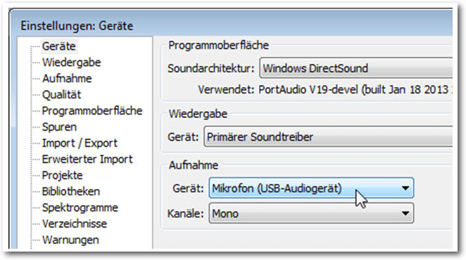Die optimalen Geräteeinstellungen
Optimal bedeutet, dass man das gewünschte Aufnahmegerät und – sofern wählbar – die Anzahl der Kanäle bestimmt. Ein typisches Headset bietet lediglich eine Mono-Aufzeichnung an. Dann wechselt man als Nächstes zu den Qualitätseinstellungen. Diese kann man projektübergreifend in den Programmeinstellungen unter „Qualität“ oder aber projektbezogen über die Zeit-/Projektfrequenzleiste anpassen. Für einen typischen Podcast genügt es, wenn man diesem eine Sample-Frequenz von 44100 Hz und ein Sample-Format von 16 bit zuweist. 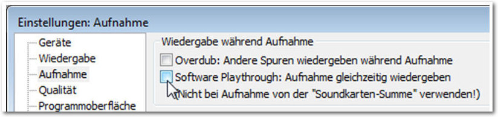
Die Aufnahmeeinstellungen
Als Nächstes sollten man die Aufnahmeeinstellungen bearbeiten. Dazu öffnet man die Programmeinstellungen und dort die Kategorie „Aufnahme“. Hier stellt man sicher, dass unter „Wiedergabe während der Aufnahme“ die beiden Optionen „Overdub“ und „Software Playthrough“ deaktiviert sind. Damit sind die wesentlichen programm- und projektübergreifenden Einstellungen vorgenommen. Sofern noch nicht geschehen, schließt man das Mikrofon an. Das USB-Gerät muss vor dem Programmstart an den Rechner angeschlossen sein, um von Audacity erkannt zu werden. Der nächste vorbereitende Schritt dient der Konfiguration des Eingangspegels. Dazu spricht man einfach einige beliebige Sätze in das Mikrofon und pegelt den Level um -9 bis -12 dB aus. Damit hat man ein gutes Signal-Rauschen-Verhältnis. Man sollte darauf achten, dass man die Null nicht überschreitet, da man andernfalls jede Menge Übersteuerungen bekommt. Für die Anpassung des Pegels kann man unter Umständen auch auf Treibersoftware des jeweiligen Herstellers zurückgreifen. Für Linux-Anwender steht ALSA zur Verfügung. Damit hat man alle notwendigen Vorbereitungen für die Aufnahme getroffen und man kann prinzipiell mit der Aufnahme beginnen. Dazu betätigt man die „Aufnahme“-Schaltfläche der Transportleiste und zeichnet den Text auf. 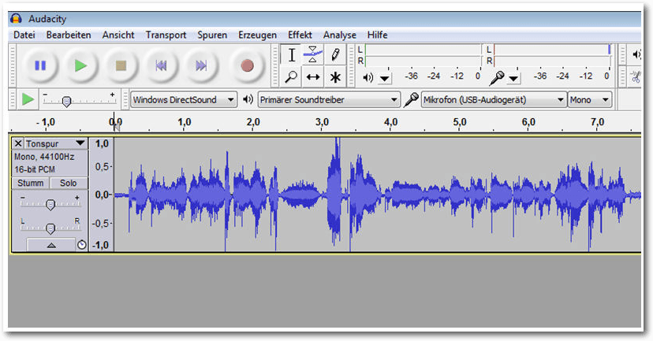
Der Anfang ist gemacht: Die ersten Sätze sind im Kasten
Podcast bearbeiten
Sind die ersten Sätze oder gar Minuten aufgezeichnet, kann man sich als Nächstes an das Bearbeiten der Aufzeichnung machen. In der Praxis ist es immer einfacher, Abschnitte zu entfernen oder nachzubearbeiten, als neue Inhalte zu ergänzen. Legt man mehr als eine Spur an, sollte man immer auch im Hinterkopf behalten, dass diese synchronisiert werden müssen. In der Regel macht man sich nach der Aufzeichnung an das Aufspüren von übersteuerten Bereichen, denn diese Bereiche wirken für das menschliche Gehör meist störend bis unangenehm. Dazu führt man den Menübefehl „Ansicht -> Übersteuerungen anzeigen“ aus. Diese Funktion markiert übersteuerte Bereiche durch senkrechte rote Linien. Es gibt nun mehrere Möglichkeiten, wie man diese übersteuerten Passagen entfernen kann. Handelt es sich um sehr kurze Übersteuerungen von weniger als einer Viertelsekunde, zoomt man einfach bis auf Sample-Ansicht heran und löscht die Abschnitte. Handelt es sich um eine längere übersteuerte Passage, hilft meist nur, die betreffenden Abschnitte mit einem nach unten korrigierten Pegel erneut aufzunehmen. Doch das Ersetzen eines kurzen Abschnitts in einer Audiodatei ist alles andere als einfach, auch weil eine nahezu identische Aufnahme in der Praxis kaum gelingt. Um einen längeren unerwünschten Bereich zu entfernen und diesen dann mit einer neuen Aufnahme zu füllen, markiert man dieses Segment und führt den Befehl „Bearbeiten -> Markiertes Audio -> Ausschneiden und Clip trennen“ aus. Audacity erzeugt eine Lücke, die man dann nur noch mit der neuen Aufnahme füllen müssen. Durch die exakte Darstellung der Lücke hat man bei dem Ersetzen immer die volle Kontrolle, wieviel Platz für die Aufnahme bleibt. Sollte man die Lücke nicht vollständig geschlossen haben, kann man diese Bereiche einfach markieren und aus der Audiospur entfernen. Man kann nicht ausreichend lange Passagen verlängern, indem man das Tempo mit dem Effekt „Tempo ändern“ herunterfährt. Beim Verlängern sollte man unbedingt Gebrauch von der Vorhören-Funktion machen, um sicherzustellen, dass die Aufzeichnung nicht allzu verzerrt klingt. Man sollten eine Aufnahme außerdem auf Ausreißer prüfen, die zwar keine Übersteuerungen darstellen, aber dennoch das Gesamtbild und damit den Hörgenuss beeinträchtigen können. Um derlei Ausreißer im Zaum zu halten, reduziert man die Verstärkung der Audiospur um ca. 3 bis 6 Dezibel. Wichtig ist, dass man in das Eingabefeld „Verstärkung“ einen negativen Zahlenwert eingibt, also beispielsweise -3, -4 oder -5. Auch hier sollte man von der Vorhören-Funktion Gebrauch machen und das Ergebnis der Effektanwendung vor dem Speichern prüfen.Feinschliff
Oftmals kombiniert man in Podcasts unterschiedliche Tonspuren, um z. B. ein Interview mit einem kurzen Song oder einem Jingle für den Hörer interessanter und leichter konsumierbar zu gestalten. In diesem Fall sind für einen Übergangssong die Ein- und Ausblendeffekte eine wertvolle Hilfe. Man könnte die Hintergrundmusik beispielsweise beim Schlusswort der Interviews bereits leicht einblenden und dann kontinuierlich die Lautstärke anheben. Hier stellt Audacity verschiedene Ein- und Ausblendeffekte zur Verfügung. Man kann mit den einfachsten Varianten beginnen und die Überblendung mit den Menübefehlen „Effekt -> Einblenden“ bzw. „Effekt -> Ausblenden“ realisieren. Schließlich sollte man noch eine Normalisierung durchführen. Auch das hilft, Verzerrungen zu verhindern. Der Normalisieren-Befehl ist ebenfalls über das Effekt-Menü verfügbar. Man kann die Hintergrundmusik auch sehr flexibel mit dem Effekt „Auto-Duck“ einblenden. Dazu legt man eine weitere Tonspur im Projekt an und importiert die gewünschte Musikdatei. Sollte es sich um eine Stereospur handeln, muss sie zunächst mit dem Befehl „Spuren -> Stereospur in Mono umwandeln“ umgewandelt werden. Dann wendet man auf die Audiospur den Auto-Duck-Effekt an und steuert damit die Einblendung. 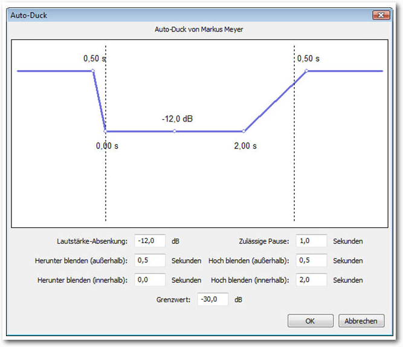Hintergrundmusik lässt sich auch wunderbar mit dem Effekt „Auto-Duck“ steuern.
Textspuren sind eine große Hilfe bei der Arbeit mit Audacity, weil man damit Erläuterungen zu verschiedenen Abschnitten eines Projekts einfügen kann – ähnlich, wie Programmierer ihre Entwicklungen mit Kommentaren versehen. So findet man sich nach einer Pause schnell wieder in einer Entwicklung zurecht und vereinfacht auch die Zusammenarbeit mit Dritten. Abschließend sollte man das Projekt in aller Ruhe am Rechner abhören und prüfen, ob es das gewünschte Ergebnis erzielt.
Podcast exportieren
Entspricht das Ergebnis des Podcast-Projekts den Vorstellungen, steht der nächste Schritt an: Man muss entscheiden, in welches Zielformat man das Projekt exportieren will. In der Regel ist die Entscheidung zwischen MP3 und Ogg Vorbis zu treffen. Beide Formate haben ihre Vor- und Nachteile. Ogg Vorbis bietet die bessere Soundqualität und erlaubt auch das Erstellen von Surround-Dateien, während MP3 auf maximal zwei Kanäle beschränkt ist. Aufgrund der breiten Unterstützung durch tragbare Geräte wie Smartphones, MP3-Player etc. fällt die Entscheidung meist für das MP3-Format aus. Damit ein Export nach MP3 überhaupt möglich ist, muss ein MP3-Encoder separat installiert werden. In der Regel ist das LAME. Ist der LAME-Encoder installiert, kann man das Projekt mit dem Menübefehl „Datei -> Exportieren“ einfach nach MP3 exportieren. Unter „Dateityp“ wählt man das Format MP3. Mit einem Klick auf „Optionen“ kann man die MP3-Option bearbeiten und dort konkret die Exportqualität festlegen. Mit einer Bitrate von 128 kbit/s ist man bestens bedient. Bei Podcasts macht eine höhere Qualitätsstufe kaum Sinn. Man kann stattdessen versuchen, die Bitrate niedriger zu setzen. Eine allgemeine Regel für die optimalen Exporteinstellungen gibt es leider nicht. Hier hilft meist nur: probieren geht über studieren, um den optimalen Mix aus Qualität und Dateigröße zu erzielen. Auch wenn Bandbreite im Internet dank Breitbandanschlüssen heute oftmals kein Hindernis mehr für den Download darstellt, sollte man auch an mobile Anwender denken, denen noch nicht die gleichen Übertragungsmöglichkeiten zur Verfügung stehen. Audacity präsentiert während des Exports einen Hinweisdialog samt Fortschrittsanzeige, anhand dessen man den Export verfolgen kann.Upload des Podcasts
Nachdem man das Projekt in das favorisierte Format exportiert und die Podcast-Datei in einem Verzeichnis der Wahl gespeichert hat, muss man die Datei nur noch publizieren. Dazu verwendet man in der Regel eine Website, über die die Datei dann von Dritten heruntergeladen werden kann. Man muss nur noch dafür sorgen, dass die Podcast-Datei auf der Seite eingebunden wird. Welchen Weg man wählt, ist von der Art der Website und den bevorzugten Werkzeugen abhängig. Hat man eine statische Website mit einem „normalen“ Webeditor erstellt, erfolgt der Upload meist mithilfe eines FTP-Clients wie FileZilla. Auch dieses Programm ist Open-Source und kann daher kostenfrei eingesetzt werden. Nach dem Upload muss man die Podcast-Datei nur mit dem Webeditor einbinden und einen Link auf diese anlegen. Noch einfacher geht es, wenn man mit einer Blog-Software wie WordPress arbeitet. Diese besitzt eine Mediathek und einen eigenen Upload-Mechanismus. Es genügt, die Audiodatei in das Medienfenster zu ziehen, um die Datei in das System zu laden. Mit dem Editor ist dann das Einbinden und Verfassen eines Textes ein Kinderspiel.Fazit
Mit Audacity ist es kinderleicht, eigene Podcasts zu erstellen und diese mit den zur Verfügung stehenden Funktionen zu bearbeiten. Die Handhabung von Schneide- und Bearbeitungsfunktionen ist so einfach, dass dies jeder interessierte Anwender hinbekommt. Links[1] http://www.freiesmagazin.de/freiesMagazin-2016-06
[2] http://www.freiesmagazin.de/freiesMagazin-2016-07
Autoreninformation |
| Holger Reibold (Webseite) promovierte in Informatik und begann in den 1990ern seine Karriere als Fachjournalist und Autor. Er veröffentlichte seitdem zahlreiche Artikel und Bücher. 2005 gründete er den Verlag Brain-Media.de. Dort hat er auch ein Buch „Audacity 2.1 kompakt“ mit weiterführenden Informationen zum Audioeditor herausgegeben. |
Beitrag teilen Beitrag kommentieren
Zum Inhaltsverzeichnis
Einführung in Gregorio 4.1.4
von Stephan Tilch Die Software Gregorio [1] bietet im Zusammenspiel mit LaTeX hochwertigen Notensatz in der alten Quadratnotation, der Notenschrift, die für Gregorianische Choräle verwendet wird. Sie ist ein Beispiel dafür, dass Freie Software auch Nischen exzellent besetzen kann. Auch über die FLOSS-Gemeinde hinaus kann Gregorio wohl als das führende Programm für diese Aufgabe gelten. Zahlreiche Initiativen im Umfeld machen die Software auch für weniger Technikaffine gut nutzbar. Der Artikel will einen kurzen Überblick zur Verwendung der Software und angeschlossenen Projekten bieten.Übersicht
Notationssoftware ist dem Musiker das, was Textverarbeitungsprogramme im Office-Bereich leisten. Digitaler Notensatz ist heute mit einer Vielzahl an Programmen möglich, proprietären wie freien, es gibt grafische WYSISWYG-Software und Auszeichnungssprachen. Die beiden Flagschiffe der FLOSS-Gemeinde heißen MuseScore [2], ein WYSIWYG-Editor, und Lilypond [3], eine LaTeX-ähnliche Auszeichnungssprache. Letztere wurde in Ausgabe 05/2015 von freiesMagazin vorgestellt [4]. Der Fokus dieser Programme liegt auf dem modernen, europäischen Notensatz. Es gibt aber noch andere Notationssysteme. Am gebräuchlichsten ist vielleicht die Quadratnotation [5] und zwar für die Notation und Praxis des Gregorianischen Chorals. Damit bezeichnet man den traditionellen einstimmigen, lateinischen Gesang der katholischen Liturgie. Entstanden ist er wohl um das 7./8. Jahrhundert und war seitdem durchgängig v. a. in den Klöstern in Gebrauch. Ursprünglich wurde er rein mündlich tradiert, was eine enorme Gedächtnisleistung von den Sängern forderte. Die Sorge um den Fortbestand führte irgendwann zur Verschriftlichung. Dies erfolgte mithilfe der sogenannten Neumen, die grobe Anhaltspunkte zum melodischen Verlauf und zur Interpretation boten. Dabei gab es regional unterschiedliche Zeichensysteme. Die Quadratnotation ist aus den nordfranzösischen und aquitanischen Neumen hervorgegangen. Die wichtigste Neuerung lag im Gebrauch von Notenlinien und Notenschlüsseln, die erstmals die Tonintervalle genau definierten. Die Quadratnotation kennt vier Linien und zwei Schlüssel, den c- und den f-Schlüssel, die jedoch auf jeder beliebigen Linie liegen können. Die Notenköpfe haben mehr oder minder quadratische Form. Längenangaben fehlten den Noten ursprünglich; dazu wurden einige Zeichen im Zuge der Standardisierung des Systems in der Neuzeit hinzugefügt. Die Quadratnotation wurde spätestens in dieser Zeit zum Standard für den Gregorianischen Choral und als solcher ist sie noch heute in Gebrauch – bei Kirchenmusikern und Musikwissenschaftlern gleichermaßen. In kritischen Ausgaben wird sie inzwischen ergänzt durch die älteren Neumen. Ein Programm für den digitalen Notensatz dieser alten Notenschrift zu finden, ist jedoch nicht so einfach. Lilypond bietet Möglichkeiten dazu, allerdings scheint dieses Feature nicht weiterentwickelt zu werden. Wer im Internet sucht, kann mehrere Projekte finden, die schon etwas in die Jahre gekommen sind und deren Aktivität eher bezweifelt werden darf. Für den Notensatz sind natürlich entsprechende Fonts nötig. Diese lassen sich selbstverständlich auch in einer normalen Textverarbeitung oder einer Desktop-Publishing-Anwendung wie Scribus verwenden. Das ist aber wenig komfortabel, insbesondere die Anpassung des Textes an die Noten bereitet mitunter Schwierigkeiten. Hier tut sich also eine echte Lücke auf. Gregorio ist eine Software, die ausschließlich für die Quadratnotation entwickelt wurde. Von Beginn an wollte Gregorio nicht nur eine vollständige Funktionalität, also insbesondere einen vollständigen Zeichensatz, bieten, sondern auch durch große Anpassungsfähigkeit und einen guten Zeichensatz hochwertige Ergebnisse ermöglichen. Zudem verpflichteten sich die Entwickler um Élie Roux und Olivier Berten von Beginn an auf die Ideale freier Software. Gregorio ist für GNU/Linux, Windows oder Mac erhältlich. Es verwendet eine eigene MarkUp-Sprache, um im Verbund mit LuaLaTeX hochwertigen Notensatz zu ermöglichen. Den weniger Technikaffinen (solche soll es ja unter Musikern geben) sei gesagt, dass eine u. U. mühsame lokale Installation nicht notwendig ist, da auch Browser-Tools zur Verfügung stehen. Auch um LaTeX-Code muss man sich dann nicht kümmern. Darüber hinaus steht eine umfangreiche Datenbank zur Verfügung, in der ein sehr großer Teil des traditionellen Repertoires bereits greifbar ist. Bevor diese Arbeitserleichterungen vorgestellt werden, soll zunächst eine Einführung in die Software selbst geboten werden.Funktionsweise
Die ursprüngliche Idee des Projektes war es, den Satz eines bestehenden Fonts per LaTeX zu ermöglichen. Das ist auch bis heute im Wesentlichen das, was technisch passiert – obwohl der ursprüngliche Font aus Lizenzgründen durch eine freie Eigenentwicklung ersetzt werden musste. Die Notation funktioniert aber nicht über die Einbindung eines LaTeX-Paketes und dessen Makros. Es wurde eine eigene Syntax zur musikalischen Notation entwickelt, die GABC-Syntax. Inspiriert ist sie von der Auszeichnungssprache ABC [6] für konventionellen Notensatz. Das Kommandozeilentool „gregorio“ wandelt dann die so notierte Musik in eine GregorioTeX-Datei um. Diese sorgt für den gewünschten Notensatz. Da die GregorioTeX-Datei nur schwer lesbar ist, empfiehlt es sich, nur im äußersten Notfall oder bei sehr hohen Qualitätsansprüchen Veränderungen daran vorzunehmen. Gregorio nutzt Funktionen von LuaTeX und kann deshalb nicht mit den älteren TeX-Compilern wie pdfTeX benutzt werden. Das Kompilieren des GABC-Codes kann dann aber von LuaTeX automatisch aufgerufen werden, sodass nur ein Befehl zur Erstellung der fertigen PDF nötig ist.Installation
Gregorio ist 2016 zum ersten Mal in TeX Live enthalten. Wer also immer eine aktuelle Version dieser TeX-Distribution installiert hat, sollte Gregorio sofort nutzen können. Wenn in Zukunft die großen GNU/Linux-Distributionen diese oder jüngere Versionen von TeX Live in den Paketquellen enthalten, sollte das die Installation stark vereinfachen. Bis dahin folgt man einfach den Instruktionen zur Installation auf den Seiten des Projekts [7] Für GNU/Linux-Systeme müssen zunächst die Quelldateien heruntergeladen werden. Das korrekte Archiv heißt immer gregorio-x.y.z.tar.bz2, wobei x.y.z. für die Versionsnummer steht, zum Zeitpunkt der Abfassung dieses Artikels also 4.1.4. Nachdem dieses entpackt wurde, öffnet man darin ein Terminal und installiert Gregorio mit zwei Befehlen:
$ ./build.sh
# ./install.sh
Da Gregorio LuaTeX nutzt, wird eine volle TeX Live-Installation empfohlen.
Wenigstens die folgenden Pakete müssen installiert sein: xcolor, kvoptions,
ifluatex, graphicx, luatexbase, luaotfload, luamplib, und xstring.
# ./install.sh
Verwendung
Gregorio funktioniert nur im Zusammenspiel mit LuaTeX (mindestens Version 0.76). Deshalb ergeben sich zunächst folgende Optionen zur Benutzung: Man kann Gregorio ganz puristisch mit einem Texteditor und der Kommandozeile bedienen, man kann den TeX-Editor seiner Wahl entsprechend anpassen oder man nutzt Scribus [8] und dessen eingebaute LaTeX-Schnittstelle. Alle Varianten sind auf der Seite des Projektes beschrieben. Dieser Artikel beschränkt sich auf die Nutzung von Gregorio ohne weitere Hilfsmittel. Es sind mindestens zwei Dateien nötig, um eine grafische Ausgabe zu erzeugen: Einmal eine TeX-Datei, die einen oder mehrere Gesänge einbindet und eventuell um Überschriften oder Textabschnitte ergänzt, und je Gesang eine GABC-Datei, die die eigentliche Notation enthält. Als Beispiel soll hier der Einzugsgesang (Introitus) der traditionellen Begräbnismesse schrittweise gesetzt werden. Das Abschreiben traditioneller Gesänge (im Unterschied zur Neukomposition) ist wohl der typische Anwendungsfall. Grundlegende LaTeX-Kenntnisse werden dabei vorausgesetzt. 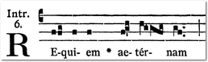Vorlage für das Notationsbeispiel aus dem Graduale Romanum (1961).
Als Minimalbeispiel sähe die TeX-Datei so aus:
\documentclass[12pt, a5paper]{scrartcl}
\usepackage{libertine}
\usepackage[autocompile]{gregoriotex}
\begin{document}
\gregorioscore{requiem}
\end{document}
Das Paket gregoriotex wurde mit der Option autocompile aufgerufen.
Diese bewirkt, dass alle eingebundenen Noten automatisch von GABC zu
GregorioTeX kompiliert werden, jedoch nur dann, wenn an der GABC-Datei eine
Änderung vorgenommen wurde. Als Schriftart wurde die Libertine gewählt, die
sich – neben der EBGaramond – von den derzeit verbreiteten freien Schriften
am besten für diesen Zweck eignet. Da sowieso LuaLaTeX benutzt werden muss, ist
die Verwendung jeder anderen auf dem Rechner installierten Schrift über das
fontspec-Paket sehr einfach. Die TeX-Datei wird gespeichert, z. B. als
Requiem_Messe.tex. Im selben Verzeichnis legt man die Datei requiem.gabc
an. Der Dateiname muss natürlich mit dem in der TeX-Datei angegebenen
übereinstimmen. Die GABC-Datei beginnt mit Metainformationen,
z. B. zum Namen, zum liturgischen Ort des Gesangs, zur Kirchentonart, der
Quelle, dem Codierer und der Lizenz:
\usepackage{libertine}
\usepackage[autocompile]{gregoriotex}
\begin{document}
\gregorioscore{requiem}
\end{document}
name: Requiem;
gabc-copyright: CC0-1.0 by Stephan Tilch, 2016 <http://creativecommons.org/publicdomain/zero/1.0/>;
office-part: Introitus;
mode: 6;
book: Graduale Romanum 1961, p. 94*;
transcriber: Stephan Tilch;
%%
Nach dem doppelten Prozentzeichen folgt die eigentliche Noteneingabe. Zunächst
der Schlüssel. In der Quadratnotation gibt es nur zwei
verschiedene Schlüssel, den c- und den f-Schlüssel, die jedoch auf jeder der
vier Notenlinien liegen können. Mit „(c4)“ wird also der c-Schlüssel auf der vierten
Notenlinie (von unten gezählt) benutzt.
Es bietet sich an, zunächst den Text einzufügen und die Silben zu trennen. Dazu
gibt es ein praktisches Browsertool, das einem den Text so präpariert, wie er
gebraucht wird [9]. Das Ergebnis muss
ungefähr so aussehen:
gabc-copyright: CC0-1.0 by Stephan Tilch, 2016 <http://creativecommons.org/publicdomain/zero/1.0/>;
office-part: Introitus;
mode: 6;
book: Graduale Romanum 1961, p. 94*;
transcriber: Stephan Tilch;
%%
Re()qui()em() ae()tér()nam()
Die Noten werden in den Klammern hinter den Silben notiert. Dieses Ineinander
von Textnotation und Melodienotation macht den Code schwerer lesbar als z. B.
Lilypond-Code. Die Wahl ist aber verständlich, da im Gregorianischen Choral
typischerweise viele Melismen auftreten, also lange Melodieketten auf einer
einzigen Silbe.
Nun folgt die Eingabe der Noten. Für die Notation der Tonhöhe entschied man
sich für eine Kodierung ohne Beachtung des Schlüssels. Der Notenkopf auf der
unteren Hilfslinie wird mit „a“ notiert, der nächsthöhere mit „b“, usw.,
unabhängig vom Schlüssel. Das macht die Notation einfacher, insbesondere wenn man Notenbilder abschreibt.
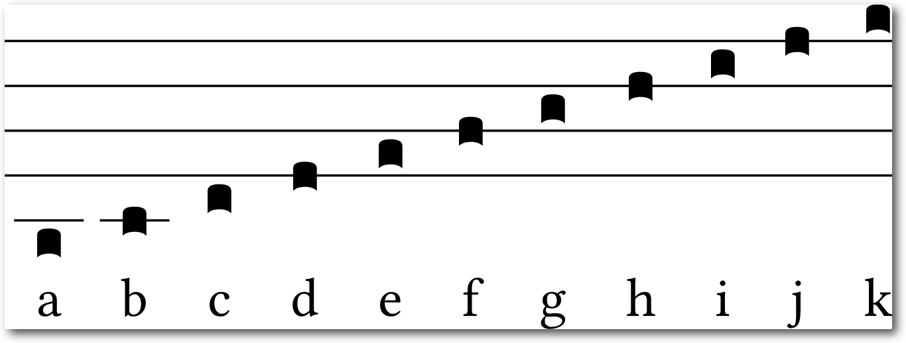Notation der Tonhöhe in GABC
Das Codebeispiel mit Text und Tonhöhen:
(c4) RE(ffg)qui(f)em(f) ae(fgh)tér(hggfg)nam(gf)
Der Code wird mit dem Befehl lualatex --shell-escape Requiem_Messe.tex
kompiliert. Der Zusatz --shell-escape ist notwendig, weil das externe
Programm gregorio aufgerufen wird. Diese Option kann man auslassen,
wenn gregorio in die Liste der zugelassen externen Programme eingetragen
wird. Diese heißt shell_escape_commands und findet sich in der Datei
texmf.cnf (zu finden, je nachdem wo TeX Live installiert wurde, z. B. unter
/usr/share/texlive/texmf-dist/web2c). Ab der Version 2016 von TeX Live
sollte das bereits voreingestellt sein.
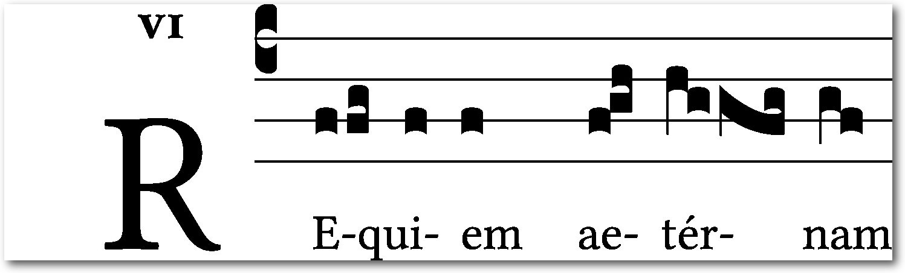Erster Schritt der Notation des Beispiels
Schaut man sich das Ergebnis genauer an, sieht man, dass Gregorio aufeinanderfolgende Noten zum Teil automatisch zu komplexeren Neumen zusammenfügt. Im Fall dieses Beispiels sind sogar schon alle Mehrtonneumen richtig gesetzt. Es fehlen noch kleinere Angaben zu Rhythmus und Tonlänge, der kleine Strich (das sog. Ictus-Zeichen) und die zwei Punkte. Diese werden durch ein folgendes Apostroph bzw. durch zwei folgende Punkte notiert. Zudem wird noch ein Asterisk im Text gesetzt und eine kurze Pause durch eine halbe Linie markiert. Ein Ausrufezeichen in einer Gruppe von drei Noten dient der Unterteilung in eine Einzel- und eine Doppelneume. Diese Unterteilung (auf der Silbe "ae") wurde bereits richtig erkannt, aber das Ausrufezeichen rückt die Neumen noch enger zusammen und markiert so die Zusammengehörigkeit.
(c4) RE(ffg)qui(f)em(f) *() ae(f!g'h)tér(hggfg)nam(gf..) (;)
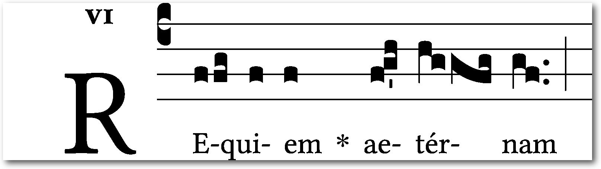Zweiter Schritt der Notation des Beispiels
In dieser Weise lassen sich recht schnell die Gesänge abtippen. Da sich die GABC-Syntax nur am optischen Erscheinungsbild der Noten orientiert und nicht an der Tonlage, sind keinerlei musikalische Kenntnisse vonnöten. Schon nach kurzer Zeit hat man den Beginn des Introitus abgetippt:
(c4) RE(ffg)qui(f)em(f) *() ae(f!g'h)tér(hggfg)nam(gf..) (;) do(f!g'h)na(hg) e(h)is(ixhjHG'hw!ivHG') Do(f)mi(fg!hvGF'g)ne:(gf..) (:)
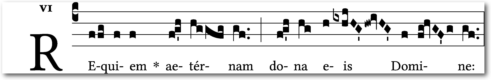Dritter Schritt der Notation des Beispiels
Hier waren noch weitere Zeichen und der entsprechende Code vonnöten. Zunächst ein Vorzeichen: Dieses notiert man durch Angabe der richtigen Höhe und ein folgendes „x“ für ein b-Vorzeichen oder ein „y“ für ein Auflösungszeichen. Die rautenförmigen Notenköpfe, die sog. „Puncta inclinata“ werden durch denselben Buchstaben, jedoch in Großschrift notiert. Zuletzt kommt noch ein sog. „Quilisma“ vor, das ist der wellenförmige Notenkopf. Dieser wird durch ein nachgestelltes „w“ zum gewohnten Buchstaben der Tonhöhe kodiert. Diese und alle anderen nötigen Codes lassen sich leicht auf der sehr übersichtlichen Notationsreferenz [10] nachschlagen. Um die Ausgabe weiter zu gestalten, stehen eine Reihe Makros zur Verfügung, die in der TeX-Datei einzusetzen sind. So kann bspw. die Größe der Initiale, der Abstand der Notenlinien oder die Farbe der Notenlinien (rot ist z.T. gebräuchlich) verändert werden. Das Projekt arbeitet inzwischen an weiteren Funktionalitäten. So wurde die GABC-Syntax um NABC erweitert. Es handelt sich um Kodierungen, um die noch ältere Notenschrift der Neumen zu setzen. Seit der Mitte des 20. Jahrhunderts wurden Ausgaben von Choralbüchern vermehrt um diese Zeichen ergänzt. Die Neumen werden über oder unter den Notenzeilen gedruckt. Sie geben die Rhythmik der Gesänge präziser wieder als die Quadratnotation, die ja ursprünglich keinerlei rhythmische Information enthielt. Gregorio ist inzwischen auch in der Lage, einen Großteil der St. Galler Neumen zu setzen.
Projekte im Umkreis
Zwar bietet Gregorio exzellente Ergebnisse, das macht aber nur einen Teil des Reizes dieser Software aus. Beinahe genauso wichtig sind die vielen kleinen Projekte im Umkreis, die die Benutzerfreundlichkeit massiv erhöhen. Das Beste vielleicht zu Beginn: Einen Großteil der traditionellen Hymnen, Antiphonen, Ordinarien etc. wird man gar nicht selbst setzen müssen, weil bereits riesige Datenbanken vorhanden sind. Auf der Seite „GregoBase“ [11] sind sämtliche Gesänge aus dem „Liber Usualis“, einer bekannten Sammlung gregorianischer Gesänge, und die allermeisten aus dem „Graduale Romanum“ (von 1908 und 1961), also dem offiziellen römischen Buch mit den variablen Gesängen für die Messe, im GABC-Format sowie als PDF, EPS oder PNG greifbar. Das traditionelle Repertoire ist damit zu einem sehr großen Teil erfasst. Einer Weiterverwendung steht dank CC0-Lizenz nichts im Weg. Ein ähnlich umfangreiches Projekt findet sich auf der Seite von Steven van Roode [12], der für verschiedene gedruckte Veröffentlichungen den Notensatz erstellt hat. Dort ist das lateinische Stundengebet in gesungener Form für alle Sonn- und Feiertage zu finden – jedoch leider nur als PDF. Für häufige Anwendungsfälle, wie das Zusammenstellen der Gesänge für die Messe eines Sonntages, kann man sich sogar den Kontakt mit Quellcode sogar ganz ersparen. Benjamin Bloomfield [13] hat verschiedene Browsertools entwickelt, mit denen der Code oder die PDF z. B. für einen bestimmten Sonn- oder Feiertag oder einen Psalm mit wenigen Klicks erstellt werden kann. Daneben gibt es Online-Editoren [14] [15], die eine lokale Installation von Gregorio überflüssig machen. Die Bedienung erfolgt allein über den Browser. Für die, die Gregorio selbst und in voller Pracht bedienen wollen, bietet das Projekt Syntaxhervorhebungsdateien für Vim, Emacs, Gedit, Notepad++ und weitere Texteditoren.Ausblick
Gregorio gehört zu den erstaunlichen Geschichten, die Freie Software mitunter schreibt. Das Projekt widmet sich einem Thema, das nicht gerade im Zentrum des Interesses der Hacker-Community steht. Aber einige wenige Enthusiasten reichten, um dem immer noch recht jungen Projekt eine erstaunliche Reife zu verleihen. Es wird weiterhin aktiv weiterentwickelt, denn auch die ältere Notenschrift der Neumen, die für wissenschaftliche Ausgaben nötig ist, soll vollständig implementiert werden. Gregorio ist außerhalb der eigenen Community erstaunlich unbekannt – bis vor kurzem gab es keinen Wikipedia-Eintrag, es wird kaum davon berichtet. Und das, obwohl sich das Projekt in seiner Domäne durchgesetzt hat. Mehrere Orden und Klöster setzen es ein, auch die „Church Music Association of America“ als eine der weltweit größten Kirchenmusik-Organisationen gehört zu den Nutzern. Sogar die Abtei von Solesmes, die die weltweit wichtigste Institution auf dem Gebiet der Gregorianik seit dem 19. Jahrhundert war und ist, verwendet für neue Publikationen Gregorio. Sollte dieser Artikel Interesse geweckt haben, so sei noch einmal die Seite des Projektes empfohlen. Auf dieser sind, leider ein wenig verstreut, zahlreiche weitere Informationen zu finden. Es existiert auch ein kleines Wiki [16] und bei Fragen zur Benutzung kann man sich an die entsprechende Mailingliste wenden. Auch ein IRC-Channel steht zur Verfügung. Die Community ist klein, aber aktiv und sehr hilfsbereit. Links[1] http://gregorio-project.github.io/
[2] https://musescore.org/de
[3] http://lilypond.org/
[4] http://www.freiesmagazin.de/freiesMagazin-2015-04
[5] https://de.wikipedia.org/wiki/Quadratnotation
[6] http://abcnotation.com/
[7] http://gregorio-project.github.io/installation.html
[8] https://www.scribus.net/
[9] http://marello.org/tools/syllabifier/
[10] http://gregobase.selapa.net/wp-content/uploads/2014/08/summary-gabc.pdf
[11] http://gregobase.selapa.net/
[12] http://www.kleingraduale.nl/LiturgiaHorarum/
[13] https://bbloomf.github.io/jgabc/faq.html
[14] http://gregorio.gabrielmass.com/cgi/process.pl
[15] http://dev.illuminarepublications.com/gregorio/
[16] http://gregoriochant.org/
Autoreninformation |
| Stephan Tilch ist studierter Theologe und Physiker. Zunächst wegen eines Windows-Crashs migrierte er 2012 zu GNU/Linux und entwickelte fortan ein immer größeres Interesse und Begeisterung für Freie Software. |
Beitrag teilen Beitrag kommentieren
Zum Inhaltsverzeichnis
Eine Geschichte von Linux – Teil 2
von Jakob Moser Mit der Veröffentlichung des Linux-Kernels 1.0 am 14. März 1994 endete Teil 1 der „Geschichte von Linux“ (siehe freiesMagazin 11/2015 [1]). Dieser Artikel knüpft nahtlos an die damalige Geschichte an und erzählt den Werdegang des Linux-Kernels, insbesondere den seiner Distributionen.Der GNU/Linux-Namensstreit
Nur wenige Monate nach der Veröffentlichung brach der GNU/Linux-Namensstreit aus [2]. Zuerst nutzte Linus Torvalds die Bezeichnung „Linux“ nur für den Kernel. Dieser wurde allerdings selten allein, sondern oft zusammen mit anderer Software, vor allem der des GNU-Projekts, ausgeliefert. Auch für diese Kombination aus Kernel und Software wurde bald überall der Name „Linux“ verwendet. Richard Stallman versuchte bald, den Namen „GNU/Linux“ durchzusetzen, um auch die Rolle von GNU und GNU-Software in den Namen einzubringen. Es bildeten sich verschiedene Lager und noch abstrusere Namen wie „Lignux“ wurden vorgeschlagen. Allerdings hat sich im Laufe der Zeit „Linux“ hauptsächlich aus Gründen der Bequemlichkeit durchgesetzt, und die meisten Leute verwenden ihn heute. Allerdings gibt es immer wieder Kontroversen, Diskussionen und kleinere Konflikte deswegen. Man kann es aber auch wie Linus Torvalds sehen, der sagte: „Es spielt eigentlich keine Rolle, wie die Leute Linux nennen, solange dem Ehre entgegengebracht wird, dem Ehre gebührt (auf beiden Seiten). Persönlich werde ich weiterhin ‚Linux‘ sagen […] Die GNU-Leute versuchten, es GNU/Linux zu nennen, und das ist ok.“Tux
Anfang 1996 [3] unterhielten sich einige Personen auf der Linux-Kernel-Mailingliste über ein geeignetes Maskottchen oder Logo für Linux. Viele der Ideen waren Parodien von Logos anderer Betriebssysteme, andere Leute schlugen Haie oder Adler vor. Linus Torvalds bemerkte irgendwann, dass er ein Freund von Pinguinen sei und schlug daraufhin einen Pinguin als Maskottchen vor. Seine Sympathie für Pinguine soll er angeblich während eines Aquariumsbesuchs in Canberra 1993 entwickelt haben. Einige Leute waren gegen die Idee, einen kleinen, dicken Pinguin als Maskottchen zu verwenden. Sie warfen ihm fehlende Eleganz oder gar Lächerlichkeit vor. Torvalds verteidigte sich vehement (unter anderem mit dem Argument, das die Stärke des Pinguins zeigen sollte: „Sie haben wohl noch nie einen wütenden Pinguin gesehen, der mit über 100 Meilen pro Stunde auf einen zurast“), und so entwarf Larry Ewing den bekannten Linux-Pinguin mit dem Grafikprogramm GIMP. Der Name stammt von James Hughes als Ableitung von Torvalds Unix [4], seitdem sind noch einige weitere Interpretationen hinzugekommen. Tux ist bis heute noch ein Symbol für Linux und Freier Software, und ist heute an allen erdenklichen und anderen Stellen zu finden.Distributionen
Nachdem nun Name, Namensstreit und Logo behandelt wurden, möchte sich der Artikel ein wenig der technischen Seite und der Entstehung der Linux-Distributionen widmen. Der Linux-Kernel allein machte ja noch kein Betriebssystem, daher begannen nach seiner GPL-Lizenzierung bald viele Leute damit, den Linux-Kernel gebündelt mit weiteren Anwendungen auszuliefern. Zu den ersten Distributionen zählten zum Beispiel das „Softlanding Linux System“ (SLS), eine zu ihrer Zeit sehr bekannte Distribution, die allerdings viele Fehler hatte. Die wohl erste kommerziell vertriebene Linux-Distribution war „Yggdrasil Linux“ [5]. Obgleich 1995 eingestellt, kann man sie auch heute noch herunterladen [6]. 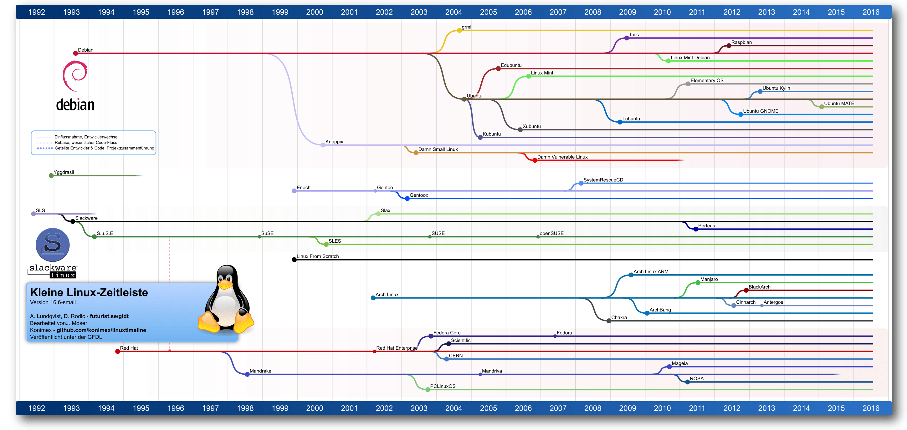Zeitlicher Zusammenhang verschiedener Linux-Distributionen. Basierend auf [7].
![[7]](https://upload.wikimedia.org/wikipedia/commons/1/1b/Linux_Distribution_Timeline.svg){kind=link}
Slackware
Mit SLS unzufrieden, veröffentlichte der Amerikaner Patrick Volkerding am 17. Juli 1993 die Abspaltung „Slackware“ [8]. Sie ist die älteste heute noch aktive Linux-Distribution. Slackware folgt dem KISS-Prinzip [9] (Keep it simple, stupid) und bietet daher von sich aus nur leichtgewichtige Tools. Insbesondere gibt es von Haus aus keine wirklich mächtigen Paketmanager mit beispielsweise Abhängigkeitsmanagement. Slackwares Motto ist „It's done when it's done“ (Es ist fertig, wenn es fertig ist), daher gibt es keine Vorankündigung und auch keine festgesetzten Termine für ein neues Release.Debian
Auch Ian Murdock war mit SLS unzufrieden. Er entwickelte allerdings keine Abspaltung, sondern eine komplett neue Distribution, die sich von SLS nur inspirieren ließ. Diese am 16. August 1993 veröffentlichte Distribution trug den Namen „Debian Linux“ [10], abgeleitet von seinem Namen und dem seiner damaligen Freundin Debra Lynn [11]. Im Mai 1994 entschied sich Murdock, die Distribution in „Debian GNU/Linux“ umzubenennen, da Debian eine freie Distribution „im Geiste von Linux und GNU“ sein sollte. So ist Debian heute eine der wenigen Distributionen, die das „GNU/Linux“ im Namen tragen. Seit seiner Veröffentlichung hat Debian an Popularität nur dazugewonnen. Auch heute ist es ein oft benutztes Betriebssystem und Basis für viele andere Linux-Distributionen. Die erste stabile Version, Debian 1.1 „Buzz“, wurde am 17. Juni 1996 veröffentlicht. Seitdem wurden alle Debian-Versionen mit einem Codenamen versehen, der sich nach einer Figur aus dem Film Toy Story richtet [12]. Die bekannten Pakettools dpkg und apt wurden 1998 eingeführt und mit Debian 2.1, erschienen am 9. März 1999, in Debian integriert.Red Hat Linux
Um die Zeit der Veröffentlichung von Debian und Slackware ist noch eine weitere Distribution erschienen, nämlich Red Hat Linux [13]. Die Version 1.0 des vor allem für Server geeigneten Linux wurde am 3. November 1994 veröffentlicht. Eigens für diese Distribution wurde das RPM-Paketformat entwickelt (ein Akronym für Red Hat Package Manager), das auch heute noch von vielen kommerziellen Distributionen zur Verteilung von Softwarepaketen verwendet wird. Red Hat Linux wurde ausschließlich innerhalb der Firma Red Hat entwickelt und in verschiedenen Versionen an Nutzer verkauft. Dabei verfolgte Red Hat das Konzept, nicht für das System an sich, sondern für die Zusammenstellung von Paketen und Paketupdates sowie Support einen jährlichen Beitrag zu verlangen. Aus diesen drei Distributionen, die alle heute noch aktiv sind (Red Hat Linux allerdings mit einer kleinen Namensänderung, mehr dazu etwas später), haben sich im Laufe der Jahre viele teils sehr erfolgreiche Abspaltungen gebildet. Bei sehr vielen der heute populären Distributionen (und bei noch einer ganzen Menge weiterer Distributionen) lässt sich eine Abstammung von einem dieser drei Projekte nachweisen.SUSE Linux
Im Mai 1996 wurde eine der ersten Abspaltungen veröffentlicht. Der Name des Systems war „S.u.S.E. Linux“, die Firma dahinter die „S.u.S.E. GmbH“ (Gesellschaft für Software- und Systementwicklung). SuSE Linux basierte auf Slackware und wurde bereits in der ersten Version (Versionsnummer 4.2) mit dem Konfigurationstool YaST („Yet another Setup Tool“) veröffentlicht, für das es auch heute noch bekannt ist. Wie Red Hat Linux wurde auch SuSE Linux zuerst nur verkauft. Im November 2003 übernahm das amerikanische Softwareunternehmen Novell die SUSE Linux GmbH, die ihren Namen im Laufe der Zeit geändert hatte. Auch der Name der Distribution wurde in SUSE Linux geändert. Im November 2007 bot SUSE erstmals die Distribution zum Download an, die kostengünstigste Version wurde dahingehend eingestellt. Einige Zeit später wurden alle Produktlinien eingestellt, ab dann gab es SUSE nur noch zum Download. Mit der Gründung des openSUSE-Projekts wurde die Entwicklung von SUSE Linux öffentlich gemacht, am 7. Dezember 2006 wurde der Name der Distribution von SUSE Linux in openSUSE [14] geändert. Die SUSE LLC (so heißt das Unternehmen heute) verkauft heute wie bei Red Hat Support und Updates für die SUSE-Varianten „SUSE Linux Enterprise Desktop“ (SLED) und „SUSE Linux Enterprise Server” (SLES).Fedora
Im Winter 2002 wurde das fedora.us-Projekt [15] gegründet. Es hatte sich als Ziel gesetzt, ein Repository für Red Hat Linux zu schaffen, das qualitativ hochwertige und aktuelle Pakete enthalten sollte. Am 22. September 2003 kündigte Red Hat an, Quelltext und Aktivitäten zum Fedora-Projekt beizusteuern und so die Arbeit an Red Hat Linux als Community-Projekt weiterzuführen. Am 5. November 2003 veröffentlichte das Fedora-Projekt die erste stabile Version der neuen Distribution. Red Hat wollte allerdings weiterhin eine Version für Geschäftskunden herausbringen und entwickelte die Red Hat Linux-Abspaltung „Red Hat Enterprise Linux“ (RHEL) [16]. Sie wird auch heute noch regelmäßig aus einer Version von Fedora entwickelt, wird aber länger als Fedora gepflegt. Heute bezeichnet man Fedora daher oft auch als die Entwicklungsversion von Red Hat Linux.CentOS
Am 14. Mai 2004 wurde CentOS 2, die erste Version von CentOS [17], veröffentlicht. Seine Ziele waren eine vollständige Binärkompatibilität zu RHEL, allerdings ohne kostenpflichtigem Support, sondern mit von der Community bereitgestellten Updates. Dies wurde dadurch möglich gemacht, dass RHEL größtenteils aus freien Paketen besteht, deren Quelltext öffentlich ist. CentOS ist wie RHEL primär für Server konzipiert und findet sich hier auch unter den für diesen Einsatz beliebtesten Distributionen. Am 7. Januar 2014 kündigten Red Hat und das CentOS-Projekt an, sich zusammenzuschließen. Red Hat stellte darauf vier der CentOS-Entwickler an und erstellte das „CentOS Governing Board“, in dem sich Mitarbeiter von Red Hat und Community-Mitglieder befinden, um die zukünftige Entwicklung von CentOS zu führen. Auch heute noch sind CentOS und RHEL sehr eng verzahnt. Fedora, CentOS und Red Hat Enterprise Linux kann man somit als „verwandt“ bezeichnen.Ubuntu
In einer Liste bekannter Linux-Distributionen darf natürlich auch Ubuntu [18] mit seiner Geschichte nicht fehlen. Das Ubuntu-Projekt (auf Zulu [19], einer afrikanischen Sprache, etwa „Menschlichkeit“) wurde in den frühen 2000ern vom südafrikanischen Multimillionär Mark Shuttleworth initiiert. Sein Ziel war das Entwickeln eines internationalisierten, barrierefreien Betriebssystems, das möglichst allen Menschen zur Verfügung steht. Shuttleworth finanziert über das von ihm gegründete Unternehmen Canonical [20] einen Großteil des Projekts, neben ihm arbeiten etwa 40 Personen hauptberuflich an dem auf Debian basierenden Betriebssystem. Im Oktober 2004 erschien die erste Ubuntu-Version 4.10 „Warty Warthog“. Die erste Zahl in der Versionsnummer bezieht sich auf das Jahr der Veröffentlichung (2004), die zweite auf den Monat (Oktober). Ubuntu erscheint immer im April und Oktober, die Versionsnummer enden daher immer entweder auf .4 oder auf .10. Auch die Versionsnamen folgen einem festen Konzept: Das erste Wort ist ein Adjektiv, das zweite ein Tier mit demselben Anfangsbuchstaben. Mit Ubuntu 11.04, das am 28. April 2011 erschien, wurde Gnome als bisherige Standard-Oberfläche von dem von Canonical entwickelten Desktop Unity ersetzt.Linux Mint
Linux Mint 1.0 [21] wurde 2006 aus Kubuntu, einer Ubuntu-Distribution mit dem KDE-Desktop, abgespalten. Die folgende Version, Linux Mint 2.0, basierte auf Ubuntu. Linux Mint hatte sich zum Ziel gesetzt, beliebte Software direkt ins System zu integrieren, darunter auch unfreie Software, wie Adobe Flash oder Multimedia-Codecs wie MP3. Der Standarddesktop von Linux Mint war lange Zeit Gnome 2; als dieses von Gnome 3 abgelöst wurde, wurde 2012 der Cinnamon-Desktop, der Elemente aus beiden Gnome-Versionen enthielt, vorgestellt [22] und ist seitdem Standard. Im Mai 2014 entschieden die Entwickler, jede Linux Mint-Version nicht mehr wie bisher auf der zugehörigen Ubuntu-Version aufzubauen, sondern nur noch Ubuntu-LTS (Long Term Support)-Versionen als Codebasis zu verwenden. Zusätzlich zu der auf Ubuntu basierenden Linux-Mint-Ausgabe gibt es auch noch die Linux Mint Debian Edition, die auf Debian basiert. Linux Mint ist insbesondere bei Einsteigern sehr beliebt und rangiert bei Distrowatch.com [23] noch vor Debian und Ubuntu ganz oben in der Liste der populären Distributionen.Arch Linux
Der Kanadier Judd Vinet begann 2001 mit der Entwicklung von Arch Linux [24]. Einerseits bewunderte er Distributionen wie Slackware für ihre Einfachheit und Leichtigkeit, andererseits war er enttäuscht von dem fehlenden Paketmanager. Seine Ziele waren daher, eine Distribution zu entwickeln, die dem Kiss-Prinzip folgt, und einen integrierten Paketmanager besitzt. Die erste Version, Arch Linux 0.1, wurde am 11. März 2002 veröffentlicht. Arch ist ein Rolling-Release-Betriebssystem. Alle Software, die für das System notwendig ist, wird über die normale Updateprozedur des Paketmanagers aktualisiert, es gibt daher auch keine Arch Linux-Versionen wie bei zum Beispiel Ubuntu. 2007 trat Judd Vinet als Arch-Entwickler zurück, er wurde durch Aaron Griffin ersetzt, der bis heute leitender Entwickler ist. Arch Linux wird von der Community entwickelt [25].Gentoo
1999 begann der US-amerikanische Programmierer Daniel Robbins mit der Entwicklung einer Linux-Distribution namens „Enoch“. Sein Ziel war es, eine Distribution ohne vorkompilierte Binärpakete zu erstellen, die auf jede Hardware optimal zugeschnitten werden kann und damit hohe Performance erreicht. Als er am 4. Oktober 1999 die Domain für die Betriebssystem-Website registrierte, entschied er sich für einen Namenswechsel zu „Gentoo“ [26], nach der gleichnamigen, extrem schnell schwimmenden Pinguinspezies [27] (dt. Eselspinguine). Da Gentoo wie Arch Linux ein Rolling-Release-Betriebssystem ist, gibt es keine Versionen, sondern nur Snapshots eines Entwicklungsstandes, auf dessen Basis unter anderem Live-Systeme erstellt werden. Der erste Gentoo-Snapshot 1.0 wurde am 31. März 2002 veröffentlicht. Im Jahr 2004 verließ Robbins das Projekt, seitdem wird Gentoo von dem „Board of Trustees“ der Gentoo Foundation geleitet. Der Paketmanager von Gentoo ist Portage [28]. Die meisten Pakete enthalten nur den Quelltext, nur für einige, große Programme wie LibreOffice sind vorkompilierte Binärpakete enthalten. Links[1] http://www.freiesmagazin.de/freiesMagazin-2015-11
[2] https://de.wikipedia.org/wiki/GNU/Linux-Namensstreit
[3] https://www.sjbaker.org/wiki/index.php?title=The_History_of_Tux_the_Linux_Penguin
[4] https://web.archive.org/web/20060922063151/http://www.ussg.iu.edu/hypermail/linux/kernel/9606.1/0175.html
[5] https://de.wikipedia.org/wiki/Yggdrasil_Linux
[6] http://www.ibiblio.org/pub/historic-linux/distributions/yggdrasil/
[7] https://upload.wikimedia.org/wikipedia/commons/1/1b/Linux_Distribution_Timeline.svg
[8] https://de.wikipedia.org/wiki/Slackware
[9] https://de.wikipedia.org/wiki/KISS-Prinzip
[10] https://de.wikipedia.org/wiki/Debian
[11] https://web.archive.org/web/20030604021612/http://ianmurdock.com/about/
[12] https://www.debian.org/doc/manuals/project-history/ch-releases.de.html
[13] https://de.wikipedia.org/wiki/Red_Hat_Linux
[14] https://de.wikipedia.org/wiki/OpenSUSE
[15] https://de.wikipedia.org/wiki/Fedora_(Linux-Distribution)
[16] https://de.wikipedia.org/wiki/Red_Hat_Enterprise_Linux
[17] https://de.wikipedia.org/wiki/CentOS
[18] https://de.wikipedia.org/wiki/Ubuntu
[19] https://de.wikipedia.org/wiki/IsiZulu
[20] https://de.wikipedia.org/wiki/Canonical
[21] https://de.wikipedia.org/wiki/Linux_Mint
[22] http://blog.linuxmint.com/?p=1910
[23] https://distrowatch.com/dwres.php?resource=popularity
[24] https://de.wikipedia.org/wiki/Arch_Linux
[25] https://wiki.archlinux.org/index.php/Arch_Linux#History
[26] https://de.wikipedia.org/wiki/Gentoo_Linux
[27] https://en.wikipedia.org/wiki/Gentoo_penguin
[28] https://en.wikipedia.org/wiki/Portage_(software)
Autoreninformation |
| Jakob Moser benutzt nun schon seit längerer Zeit Linux. Er begann mit Ubuntu 14.04, im Moment nutzt er Arch Linux unter KDE Plasma 5. |
Beitrag teilen Beitrag kommentieren
Zum Inhaltsverzeichnis
Rezension: Blender 2.7 – Das umfassende Handbuch
von Martin Stock Wer sich für 3D-Modelling oder Arbeit mit Effekten interessiert, wird an der OpenSource-Software „Blender“ nicht vorbeikommen. Dafür gibt es nun ein aktuelles Handbuch mit dem Titel „Blender 2.7 – Das umfassende Handbuch“ [1]. Redaktioneller Hinweis: Wir danken dem Rheinwerk Verlag für die Bereitstellung eines Rezensionsexemplares. Auf den ersten 18 Seiten befindet sich das mächtige Inhaltsverzeichnis, das in 17 Hauptkapitel und mehrere Unterkapitel aufgeteilt ist. Von der Geschichte von Blender, über die Arbeitsflächen und das Arbeiten mit Objekten bis hin zu Lichtdesign, Simulation, Tracking, den Video Sequence Editor und noch viel mehr Themen für das große Programm finden sich auf den insgesamt 776 Seiten. In dem Buch gibt es keine Schwerpunkte, die ausführlicher behandelt werden als andere Themen. Jedes Thema wird so ausführlich es geht beschrieben. Dabei merkt man gleich beim Lesen, wie umfangreich und professionell die Software ist.Für wen ist das Buch?
Für Anfänger, die sich noch nie mit Modelling, Texturing, Animation, Simulation oder Lichtdesign beschäftigt haben. Für Fortgeschrittene, die ihr bisheriges Wissen nachschlagen oder erweitern möchten. Für Profis, die das Buch als Nachschlagewerk nutzen möchten.Wie liest sich das Buch?
Das Buch ist strukturiert aufgebaut. Am Anfang kommt die trockene Theorie, die allerdings notwendig ist, sonst findet man sich später selber nicht mehr zurecht. Allerdings wird über das gesamte Buch oft Theorie und Praxis miteinander kombiniert, und vor der Praxis gibt es in jedem Kapitel Erklärungen, die auch mal etwas länger ausfallen können. Sehr viele Grafiken und Hinweisboxen helfen dem Leser, wichtige Hinweise zu finden und worauf man achten soll. Die Texte sind verständlich und flüssig geschrieben.Die beiliegende DVD
Die beiliegende DVD dient als Anreger für die „Video-Trainings“ des Verlages über Blender. Als Beispiele befinden sich Anfänge von zwei verschiedenen Videotrainings: 1: Compositing & Rendering. 2: Charakter-Design. Es gibt noch weitere Kapitel, die allerdings nur durch ihren Namen hervorstechen. Das sind keine Kapitel, in denen man Beispiel-Trainings ansehen kann. Vielmehr sind es nur kleine Werbefilme für den Verlag und dessen Produkte. Solche Filme sollten normalerweise nicht auf solch einer DVD vorhanden sein und stören ziemlich. Auch die Bezeichnungen sind irreführend und suggerieren etwas anderes, was man tatsächlich zu sehen bekommt. Zusätzlich gibt es auf der DVD das gesamte Beispiel- und Übungsmaterial aus dem Buch, die Software Blender in der Version 2.71, Add-Ons für die Erweiterungen von Blender, einen Lehrfilm und einen sogenannten „Open-Movie“ mit dem Titel „Caminandes – Gran Dillama“. Das Buch kostet 49,90 € im Handel. Über solche Preise kann man sich streiten, wirklich interessierte Blender-Einsteiger und Anwender werden jedoch kaum ein umfangreicheres Buch als dieses finden.Über den Autor des Buches
Thomas Beck hat schon sein ganzes Leben mit 3-D-Software und -Anwendungen zu tun. Seit seinem 6. Lebensjahr interessiert er sich für 3-D-Umsetzungen in Spielen und anderen Softwareentwicklungen. 2013 wurde er in den Kreis der Blender-Entwickler aufgenommen und kann sein über 15 Jahre altes Fachwissen einbringen. Außerdem ist er zertifizierter Blender-Trainer!Fazit
Dieses Buch nennt sich Handbuch. Es ist nicht mit einem Taschenbuch zu verwechseln, das man auch abends mit ins Bett nehmen kann. Das Buch ist schwer und nicht gerade handlich. Dafür bietet es viel Wissen, das man nicht so schnell innerhalb weniger Stunden im Internet nachgeschaut hat. Anfänger werden vielleicht durch diesen massiven Umfang des Buches und die Fülle der Informationen zuerst etwas abgeschreckt und gebremst, damit weiter zu arbeiten. Aber wenn man sich immer weiter vorantastet, kommt man zu den ersten Ergebnissen, die einen motivieren und zum Fortfahren animieren. Redaktioneller Hinweis: Da es schade wäre, wenn das Buch bei Martin Stock nur im Regal steht, wird es verlost. Die Gewinnfrage lautet: „Wie heißt der Schimpansenkopf, der von Blender als Beispielfigur verwendet wird?“ Die Antwort kann bis zum 11. September 2016, 23:59 Uhr über die Kommentarfunktion oder per E-Mail anBuchinformationen | |
| Titel | Blender 2.7 – Das umfassende Handbuch [1] |
| Autor | Thomas Beck |
| Verlag | Rheinwerk, 2014 |
| Umfang | 776 Seiten |
| ISBN | 978-3-8362-2496-3 |
| Preis | 49,90 € (gebunden), 44,90 € (E-Book) |
Links
[1] https://www.rheinwerk-verlag.de/blender-27_3404/
Autoreninformation |
| Martin Stock ist von Blender und dem Buch zur Software begeistert. Allerdings überlässt er es lieber anderen, sich voll und ganz dieser Software hinzugeben. |
Beitrag teilen Beitrag kommentieren
Zum Inhaltsverzeichnis
Rezension: Adventures in Arduino
von Jochen Schnelle Der Arduino [1] ist eine populäre Physical-Computing-Plattform, welche einen einfachen Einstieg in die Welt der Elektronik und Microcontroller-Programmierung bietet. Der Arduino ist dabei auch durchaus für Kinder und Jugendliche geeignet. Und an genau diese Leserschaft wendet sich das vorliegende, englischsprachige Buch „Adventures in Arduino“ [2] primär. Redaktioneller Hinweis: Wir danken dem Wiley-VCH Verlag für die Bereitstellung eines Rezensionsexemplares. Die Zielgruppe des Buchs wird auch auf der gelben Hinweisbox auf dem Buchcover noch mal klar gemacht. Dort steht: „9 Awesome Projects written especially for young people“, auf deutsch: „9 tolle Projekt, besonders für junge Leute“. Insgesamt besteht das Buch aus zehn Kapiteln. Im ersten Kapitel wird eine kurze Einführung zum Arduino gegeben, außerdem wird hier erläutert, welche Materialien etc. für die im Buch beschriebenen Projekte benötigt werden. Die folgenden neun Kapitel sind dann die verschiedenen Projekte, welche im Kontext des Buchs als „Adventure“ (deutsch: Abenteuer) bezeichnet werden. Den Abschluss des Buchs bilden zwei Anhänge. Im ersten Teil werden Tipps für weitere Projekte und Links zu weiterführenden Informationen im Internet gegeben. Der zweite Anhang führt eine Reihe möglicher Bezugsquellen für die in den Projekten benötigten Materialen auf.Abwechslungsreiche Projekte
Die neun Projekt sind recht abwechslungsreich und werden im Verlauf des Buchs immer komplexer, aber nie kompliziert. Den Anfang macht der quasi obligatorische LED-Schaltkreis. Weitere Projekte sind z.B ein „Safe“, bei dem mit Hilfe von Potentiometern der richtige „Code“ eingestellt werden muss, damit ein Servo-Motor den Deckel des Safes öffnet. Ein weiteres interessantes Projekt ist ein elektrisches Windspiel. Das abschließende und auch umfangreichste Beispielprojekt in diesem Buchs ist ein vom Arduino überwachtes Kugellabyrinth [3]. Für sieben der neun Projekte kommt der Arduino Uno zum Einsatz. Für ein Projekt wird ein Arduino Leonardo benötigt und für ein Projekt ein Lilypad Arduino USB.Viel Praxis, wenig Theorie
Insgesamt ist das Buch sehr praxisnah geschrieben, die Autorin folgt überwiegend der Maxime „Learning by doing“. In allen Projekten werden diese schrittweise vorbereitet, in dem z. B. neue Befehle für den benötigten Programmcode anhand von kleinen Beispielen erklärt werden, bevor das eigentliche Projekt des Kapitels angegangen wird. Auch beschränkt sich die Theorie auf das benötigte Minimum, es gibt keine ausschweifenden Exkurse in die (Un-)Tiefen der Elektrotechnik und der Physik. Alle Projekte beinhalten auch mal weniger, mal mehr Bastelarbeit neben der elektrischen Schaltung. Beim Basteln kommen zumeist die typischen „normalen“ Bastelutensilien wie Papier, Pappe, Schere und Kleber zum Einsatz.Wie liest es sich?
Das Buch liest sich sehr flüssig. Die Kapitel sind gut strukturiert und alles wird in ausreichender Tiefe erklärt, so dass beim Lesen keine Fragen offen bleiben. Auch der Programmcode, welcher für das Beispielprojekt benötigt wird, ist komplett im Buch abgedruckt und wird gut und umfassend erklärt. Das Englisch des Buchs ist gut verständlich und klar geschrieben, hier sollte man beim Lesen mit normalen Schulenglisch kaum Verständnisprobleme haben.Fazit
Das vorliegende Buch „Adventures in Arduino“ ist ein gelungenes Buch, welches gut und praxisnah in die Welt des Arduino einführt. Im deutschsprachigen Raum dürfte sich die eigentliche Zielgruppe, (ältere) Kinder und Jugendliche, allerdings mit der englischen Sprache schwer tun, da in diesem Alter die notwendigen Kenntnisse eher noch nicht vorhanden sind. Nichtsdestotrotz ist das Buch eine Empfehlung wert, durchaus auch für Erwachsene. Es sollte in die engere Wahl gezogen werden, wenn Einsteigerliteratur zum Arduino gesucht wird. Redaktioneller Hinweis: Da es schade wäre, wenn das Buch bei Jochen Schnelle nur im Regal steht, wird es verlost. Die Gewinnfrage lautet: „Die Arduino Plattform ist nach einer Bar benannt, welche wiederum nach dem Italiener Arduin von Ivrea benannt ist. Welche Funktion hatte Arduin von Ivrea zwischen 1002 und 1014?“ Die Antwort kann bis zum 11. September 2016, 23:59 Uhr über die Kommentarfunktion oder per E-Mail anBuchinformationen | |
| Titel | Adventures in Arduino [2] |
| Autor | Becky Stewart |
| Verlag | Wiley-VCH, 2015 |
| Umfang | 320 Seiten |
| ISBN | 978-1-11894-847-7 |
| Preis | ca. 20,- € |
Links
[1] https://www.arduino.cc/
[2] http://www.wiley-vch.de/publish/dt/books/ISBN1-118-94847-5/
[3] https://en.wikipedia.org/wiki/Labyrinth_(marble_game)
Autoreninformation |
| Jochen Schnelle (Webseite) besitzt auch einen Arduino Uno, mit dem er hin und wieder „spielt“ und bastelt. |
Beitrag teilen Beitrag kommentieren
Zum Inhaltsverzeichnis
Veranstaltungskalender
Messen | ||||
| Veranstaltung | Ort | Datum | Eintritt | Link |
| Kieler Linuxtage | Kiel | 16.09.–17.09.2016 | frei | http://www.kieler-linuxtage.de/ |
| Linux Presentation Day | Linux Community | 22.10.2016 | frei | http://www.linux-presentation-day.de/ |
| OpenRheinRuhr | Oberhausen | 05.11.–06.11.2016 | 5 EUR | http://www.openrheinruhr.de/ |
| Ubucon Europe | Essen | 18.11.–20.11.2016 | – | http://ubucon.eu/ |
| BSides | Wien | 22.11.2016 | frei | http://bsidesvienna.at/ |
| LinuxDay | Dornbirn | 26.11.2016 | frei | http://linuxday.at/ |
Vorschau
freiesMagazin erscheint am ersten Sonntag eines Monats. Die Oktober-Ausgabe wird voraussichtlich am 2. Oktober u. a. mit folgenden Themen veröffentlicht:- Redis
- Volltextsuche mit SQLite
Konventionen
An einigen Stellen benutzen wir Sonderzeichen mit einer bestimmten Bedeutung. Diese sind hier zusammengefasst:| $: | Shell-Prompt |
| #: | Prompt einer Root-Shell – Ubuntu-Nutzer können hier auch einfach in einer normalen Shell ein sudo vor die Befehle setzen. |
| ~: | Abkürzung für das eigene Benutzerverzeichnis /home/BENUTZERNAME |
Impressum ISSN 1867-7991
freiesMagazin erscheint als PDF, EPUB und HTML einmal monatlich.Erscheinungsdatum: 4. September 2016
Kontakt | |
| Postanschrift | freiesMagazin |
| c/o Dominik Wagenführ | |
| Beethovenstr. 9/1 | |
| 71277 Rutesheim | |
| Webpräsenz | http://www.freiesmagazin.de/ |
|
Autoren dieser Ausgabe | |
| Hans-Joachim Baader | Slackware 14.2 |
| Dr. Diether Knof | ImageMagick – eine Einführung |
| Mathias Menzer | Der August im Kernelrückblick |
| Jakob Moser | Eine Geschichte von Linux – Teil 2 |
| Holger Reibold | Podcasts mit Audacity |
| Jochen Schnelle | Rezension: Adventures in Arduino |
| Martin Stock | Rezension: Blender 2.7 – Das umfassende Handbuch |
| Stephan Tilch | Einführung in Gregorio 4.1.4 |
|
Redaktion | |
| Dominik Wagenführ (Verantwortlicher Redakteur) | |
| Kai Welke | |
|
Satz und Layout | |
| Benedict Leskovar | Kai Welke |
|
Korrektur | |
| Frank Brungräber | Vicki Ebeling |
| Stefan Fangmeier | Mathias Menzer |
| Christian Schnell | Karsten Schuldt |
|
Veranstaltungen | |
| Ronny Fischer | |
|
Logo-Design | |
| Arne Weinberg (CC-BY-SA 4.0 Unported) | |
Soweit nicht anders angegeben, stehen alle Artikel, Beiträge und Bilder in freiesMagazin unter der Creative-Commons-Lizenz CC-BY-SA 4.0 International. Das Copyright liegt beim jeweiligen Autor. Die Kommentar- und Empfehlen-Icons wurden von Maren Hachmann erstellt und unterliegen ebenfalls der Creative-Commons-Lizenz CC-BY-SA 4.0 International. freiesMagazin unterliegt als Gesamtwerk der Creative-Commons-Lizenz CC-BY-SA 4.0 Unported mit Ausnahme der Inhalte, die unter einer anderen Lizenz hierin veröffentlicht werden. Das Copyright liegt bei Dominik Wagenführ. Es wird erlaubt, das Werk/die Werke unter den Bestimmungen der Creative-Commons-Lizenz zu kopieren, zu verteilen und/oder zu modifizieren. Die xkcd-Comics stehen separat unter der Creative-Commons-Lizenz CC-BY-NC 2.5 Generic. Das Copyright liegt bei Randall Munroe.
File translated from TEX by TTH, version 4.08.
On 9 Nov 2016, 21:37.